Cours Technologies Web
LP ESSIG - Université Grenoble Alpes
Sur cette page sont disponibles les différents cours / TP en version HTML.
Vous y trouverez également un glossaire des termes importants ainsi que les sujets d'examen des années précédentes.
Le contenu de cette page est actualisé avant chaque séance au fil de votre progression.
Objectifs du cours :
- Avoir connaissance des principaux éléments (protocoles, spécifications, etc.) qui composent les technologies web.
- Connaître les principaux éléments nécessaires à la création de page web (HTML, CSS).
- Comprendre l'architecture client / serveur appliquée à la création de sites web dynamiques.
- Avoir connaissance d'une partie des possibilités offertes par le langage Javascript.
Séances :
| Date | Contenu |
|---|---|
| Mer. 11/01/23 (10-12h) | Éléments théoriques |
| Mer. 11/01/23 (13-15h) | Introduction HTML 5 / CSS 3 |
| Mer. 11/01/23 (15-17h) | Structurer et styler un document HTML |
| Jeu. 12/01/23 (10-12h) | Le framework bootstrap |
| Jeu. 12/01/23 (13-15h) | JavaScript - Notions théoriques |
| Jeu. 12/01/23 (15-17h) | JavaScript - Mise en pratique |
| Ven. 13/01/23 (10-12h) | Programmation Web côté serveur en Python |
| Ven. 13/01/23 (13-15h) | Interactions serveur/client, formulaires et BD |
| Ven. 13/01/23 (15-17h) | Technos Web... quoi d'autre ? |
Modalités d'évaluation :
-
Un test final de 45min lors d'une séance (date à définir) prévue à cet effet (½ de la note)
-
Un TP à faire à la maison (½ de la note)
Supports de cours : Matthieu Viry
(préparé sur la base des supports de Marlène Villanova)
Cours d'introduction aux Technos Web
Éléments théoriques
Voir le cours sous forme de slides
Cours / TP
Introduction à la création de pages Web en HTML 5 / CSS 3
HTML est l’abréviation de HyperText Markup Language. Il s'agit d'un langage qui formalise l'écriture d'un document web à l’aide de balises.
Une page HTML est un fichier texte contenant des balises permettant de structurer le contenu de la page (titres, paragraphes, images, liens, etc.).
La mise en forme du contenu est prise en charge par un autre fichier codé dans le langage Cascasding Style Sheet (appelé une feuille de style en cascade). L'expression de « cascade » permet ici de désigner la possibilité, pour un document HTML, d'avoir un style hérité de plusieurs de ces feuilles de style.
Ce TP est une brève introduction à ces 2 langages complémentaires.
1. Environnement de travail
L’environnement dans lequel nous allons travailler comprend :
- un éditeur de code (par exemple Brackets, VS Code ou NotePad++) pour créer et modifier du code,
- le navigateur de votre choix (Firefox ou Chrome de préférence, Microsoft Edge, etc.) pour visualiser les pages créées et naviguer d’une page à l’autre.
Si vous voulez utiliser VS Code il est normalement possible d'en installer une version "portable" dans votre dossier utilisateur. Il faut:
- télécharger la version
.zippourWindows64bitssur la page https://code.visualstudio.com/download. - dézipper le fichier téléchargé.
- créer un dossier nommé
datadans le dossier de VS Code (VSCode-win32-x64-1.62.2). - l'application peut être lancée en double-cliquant sur
Code.exe.
2. HTML : principe général des balises
2.1 Balises HTML
Les balises structurent le contenu en délimitant les différentes parties du document HTML (titre, paragraphe, ...). Elles fonctionnent par paire: une balise ouvrante <nom_balise>, une balise fermante </nom_balise> délimitant ensemble une partie du contenu, représenté par une chaîne de caractères. Exemple d’une balise délimitant un paragraphe :
<p>ici le texte du paragraphe</p>
L’exemple suivant montre la syntaxe permettant de placer une image dans la page Web. Dans la balise ouvrante, on trouve des paires attribut/valeur :
<img src="smiley.gif" alt="Smiley face" height="42" width="42"></img>
srcpermet d’indiquer le chemin vers le fichier imagealtdéfinit le texte de substitution à afficher éventuellementheightetwidthdonnent les dimensions de l’image.
Dans certain cas, une seule balise – à la fois ouvrante et fermante – est utilisée : <nom_balise />, cela ne l'empêche pas de contenir des attributs ; en réalité on l'utilise notamment pour la balise <img> et on écrira donc plus souvent :
<img src="smiley.gif" alt="Smiley face" height="42" width="42" />
Les balises HTML peuvent être imbriquées entre elles :
<body>
<h1>du texte</h1>
<p>
du texte encore, avec une image
<img src="smiley.gif" alt="Smiley face" height="42" width="42" />
et la fin du texte
</p>
</body>
Ici la balise p (paragraphe) contient la balise img (image).
Remarque : Lorsque plusieurs balises sont imbriquées, une règle simple s'applique : une balise ouverte à l'intérieur d'une autre doit obligatoirement être refermée avant la fermeture de sa balise mère.
2.2 Structure générale d’un document HTML
<!DOCTYPE html>
<html>
<head>
<meta charset="utf-8"/>
<meta name="Language" content="fr" />
<meta name="Description" content="cette page…" />
<title>Titre de la page</title>
</head>
<body>
Corps de la page, ce qui est visible...
</body>
</html>
La première ligne du document est indispensable : elle indique qu'il s'agit d'une page HTML. En HTML5 on écrit simplement <!DOCTYPE html> (vous pouvez rencontrer des fichiers HTML de versions antérieures avec un doctype beaucoup plus compliqué...).
Ensuite, la balise <html> </html> englobera l’ensemble des autres balises de la page. Elle contient deux paires de balises:
- La balise
<head> </head>délimitant l’entête du document et contenant diverses informations sur le document lui-même (métadonnées). Son contenu n’est pas visible dans la page interprétée par le navigateur. À noter :- l’encodage du texte
<meta charset="utf-8"/>pour éviter les problèmes d’affichages des caractères spéciaux - La balise
<title>Titre de la page</title>qui contient le titre (assez court) qui s’affiche dans l’onglet de la fenêtre du navigateur.
- l’encodage du texte
- La balise
<body> </body>délimitant le corps du document. Cette portion contient la partie visible du document HTML. C’est ici qu’on trouvera les autres balises (de différents types) structurant le document.
Exercice 1 : Création d’une page – une introduction au langage HTML
La page qui va nous servir d’exemple est la page d’accueil du site web d’un centre commercial. La page accueil.html est à récupérer à l'emplacement suivant : TP2.zip, puis nous allons :
- la visualiser dans l’éditeur de code (lancez l’éditeur, puis ouvrez le fichier depuis le menu) : vous voyez le code HTML
- la visualiser dans le navigateur : vous voyez le code interprété par le navigateur (« la page web »)
üöÄ Nous allons compl√©ter le code du fichier accueil.html en suivant les instructions donn√©es en commentaires. Attention, une erreur de syntaxe s'est √©galement gliss√©e dans ce fichier, il faut la corriger !
Remarque : Vous passerez d’un outil à l’autre pour modifier et visualiser ce code (i.e. de l’éditeur au navigateur), sans fermer ces logiciels mais en enregistrant vos modifications dans l’éditeur et en actualisant la page dans le navigateur pour que le code soit réinterprété.
Exercice 2 : introduction à l’utilisation des hyperliens
Plusieurs types de liens existent. Pour l’instant nous allons voir les liens envoyant vers une autre page (du web ou que vous avez créée).
Pour pointer vers une page du web, on utilisera :
<a href="https://www.stid-grenoble.fr/">Lien vers le site de STID</a>
ce qui affiche : Lien vers le site de STID.
Pour pointer vers une de ses propres pages, il suffit de donner le chemin vers le fichier comme valeur pour l’attribut href.
Remarque : Un mécanisme existe pour demander au navigateur d'ouvrir la cible du lien si possible dans un nouvel onglet ou sinon dans une nouvelle fenêtre. Il faut pour celà utiliser l'attribut
targetet lui donner la valeur_blank:
<a href="https://fr.wikipedia.org/" target="_blank">Wikipedia</a>
üöÄ Consignes:
- Créez une nouvelle page appelée
partenaires.htmlet placez-la au même endroit que le fichieraccueil.html. - Éditez le document
partenaires.htmlpour ajouter un lien vers le site du département STID (/!\ attention, la cible de ce lien doit s'ouvrir dans un nouvel onglet car on ne veut pas que les visiteurs quittent notre site !). - Insérez un lien vers la page
partenaires.htmldans le fichieraccueil.html. - En plus (ou à la place) d'utiliser un morceau de texte, on souhaite que l'utilisateur puisse accéder à la page
partenaires.htmlen cliquant sur l'image ajoutée précédemment. Comment devez-vous vous-y prendre ?
3. CSS : Objectifs et avantage
Une feuille de style est un document associé à un document HTML et qui indique comment devra être affiché tel ou tel élément de la page.
Par exemple, une feuille de style permettra de présenter :
- tous les liens en italique, soulignés et en bleu
- tous les liens cliqués en italique, soulignés et en vert
- tous les paragraphes de cours à connaître en police Comic, de taille 11, en noir, surlignés en gris et centrés
Le but recherché est de mettre en place une indépendance entre le contenu d’une page web et sa présentation, et ce pour garantir :
- une meilleure lisibilité du code source puisque les 2 aspects (contenu et style) sont séparés
- un gain de temps quand il s’agit de procéder à des modifications : pour changer, pour tous les titres, la taille de police, il suffit de changer une valeur à un seul endroit et la modification sera répercutée partout.
- une réutilisation aisée d’un contenu (pour lui appliquer d’autres styles) ou d’une présentation (qu’on appliquera à d’autres contenus).
3.1 Syntaxe
Il existe 3 façons de définir le style d'éléments en utilisant la syntaxe des CSS. Par exemple, pour que la couleur de fond d’un document HTML soit rouge, on pourra :
- Utiliser l'attribut « style » des balises HTML. Exemples :
<body style="background-color: red;"><p style="font-family: cursive">Contenu du paragraphe en police manuscrite</p>
- Utiliser la balise HTML « style » (dans l'en-tête de la page HTML, entre
<head>et</head>). Exemple :
<style type="text/css">
body { background-color: red; }
</style>
- Utiliser une feuille de style externe et placer un lien vers la feuille de style dans l'en-tête de la page HTML.
Les instructions de style sont placées dans un fichier texte dont l’extension est
.cssalors que le contenu est dans le fichier HTML appelant. Nous privilégierons cette 3ème solution pour coder le style à appliquer à nos pages HTML. Une feuille de style externe est ainsi constituée d’une série de blocs d’instructions composés chacun:- d’un sélecteur,
- d’une accolade ouvrante,
- d’une série de couples propriété/valeur séparés par des points virgules,
- et d’une accolade fermante.
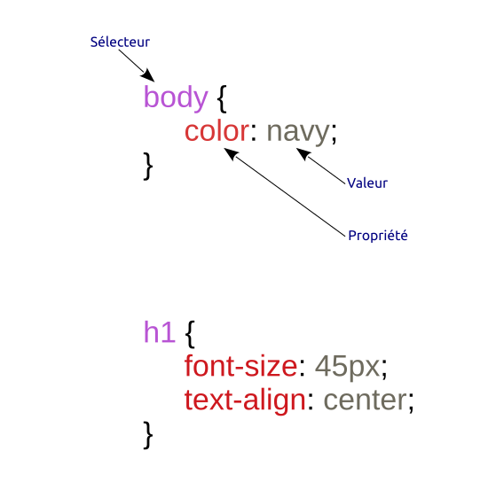
Pour revenir à l’exemple, on écrira ainsi un fichier texte contenant l’instruction body { background-color: red; } et on associera ce fichier à un document HTML : pour établir le lien avec la feuille de style (supposons qu’elle soit nommée mafeuille.css), on écrira dans l’entête du fichier HTML (i.e. entre les balises <head> </head>) :
<link rel="stylesheet" type="text/css" href="mafeuille.css" />
Exercice 3 : Découverte des CSS
Nous allons laisser de côté l'exemple de la page web du site commercial le temps d'un exercice. Rendez-vous sur la page https://www.w3schools.com/css/tryit.asp?filename=trycss_default du site w3schools pour découvrir les CSS de manière interactive.
Prenez connaissance du document HTML qui vous est présenté (à gauche).
Remarque : dans cet outil, la balise
<style>est utilisée (cf. 2ème syntaxe présentée).
üöÄ Consignes :
Modifiez les instructions comme indiqué :
- pour
body, changer la couleur par#550066(cliquez sur le bouton ‘Run’ pour visualiser le résultat après chaque modification) - pour
h1, utilisez la couleur jaune et alignez le texte à gauche - pour
p, passez en Arial 16 pixels, écrit en blanc (color: white;) - ajouter d’autres textes encadrés par des balises
<h1></h1>et<p></p> - modifier à nouveau les caractéristiques de style applicables aux balises
<h1></h1>et<p></p>
Exercice 4 : Liaison entre un fichier HTML et un fichier CSS
Retour à l'exemple des exercices 1 et 2...
üöÄ Consignes :
- Dans l’entête du fichier
accueil.html(celui de la page d’accueil du site web du centre commercial), établissez le lien vers la feuille de style fournie (styleAccueil.css). - Visualisez le fichier HTML dans le navigateur.
- Ouvrez ensuite le fichier
styleAccueil.cssavec l’éditeur de code. - Modifiez et/ou ajoutez d’autres propriétés et/ou d’autres sélecteurs et visualisez le résultat :
- Changez la taille de l'image afin qu'elle n'occupe que
100pxde la largeur de la page, - Changez le style du titre
h1pour quelque chose de plus sobre, - Définissez un style pour les éléments de titre
h2, - Essayer de trouver sur quelle(s) propriété(s) CSS il est possible de jouer pour éloigner le titre
h1du sous-titreh2.
- Changez la taille de l'image afin qu'elle n'occupe que
3.2 Pour aller plus loin avec les CSS
Jusqu’ici, vous avez écrit des instructions de style qui s’appliquent à une balise (les mêmes balises ex. <h1> ont un seul et même style). Nous allons voir deux mécanismes supplémentaires portés par les attributs HTML class et id qui permettent d’appliquer des styles différents aux différentes occurrences d’une même balise.
Les classes. On définit autant de classes que nécessaires pour la balise concernée et on associe un style à chacune des classes. La notation suivante est adoptée :
Code CSS:
p.typeA { color: blue; }
p.typeB { color: red; }
Code HTML:
<p>Un paragraphe sans style particulier<p>
<p class="typeA">Un paragraphe qui utilise le style défini par p.typeA dans la CSS</p>
<p class="typeB">Un autre qui utilise le style défini par p.typeB dans la CSS</p>
<p class="typeA">De nouveau un paragraphe qui utilise le style défini par p.typeA</p>
<p class="typeB">et un paragraphe qui utilise également le style défini par p.typeB</p>
Résultat:
Un paragraphe sans style particulier
Un paragraphe qui utilise le style défini par p.typeA dans la CSS
Un autre qui utilise le style défini par p.typeB dans la CSS
De nouveau un paragraphe qui utilise le style défini par p.typeA
et un paragraphe qui utilise également le style défini par p.typeB
On note que, puisque les classes typeA et typeB ne sont pas utilisées sur d'autres éléments que des paragraphes, il aurait été identique d'écrire :
.typeA { color: blue; }
.typeB { color: red; }
Il existe une autre façon de procéder pour permettre l’application de styles différents à une même balise. Il s’agit d’utiliser non pas une classe (attribut class) mais un identifiant (attribut id).
Le principe est le même dans les deux cas mais la différence est qu’on utilisera l’attribut class lorsque le style est applicable à plusieurs endroits dans le document alors qu’on utilisera l’attribut id quand le style est spécifique à un endroit particulier dans le document.
En effet, la valeur d’un id est censée être unique dans le document HTML.
Code CSS:
#abc {
color: blue;
text-align: center;
}
#ident1 { color: green; }
Code HTML:
<p>Un paragraphe sans style particulier<p>
<p id="abc">Seul paragraphe utilisant le style défini par #abc dans la CSS</p>
<p id="ident1">Seul qui utilise le style défini par #ident1 dans la CSS</p>
Résultat:
Un paragraphe sans style particulier
Seul paragraphe utilisant le style défini par #abc dans la CSS
Seul qui utilise le style défini par #ident1 dans la CSS
3.3 Quelques autres sélecteurs CSS que vous pourrez rencontrer...
La sélection de plusieurs éléments séparés par une virgule , :
h1, h2, h3 {
color: green;
}
Ici plusieurs types d'éléments (h1, h2 et h3) sont sélectionnés pour appliquer à tous une même règle.
Le sélecteur d'attributs avec la notation entre crochets :
img[src] {
border: solid 1px gray;
}
Ce sélecteur sélection les éléments qui possèdent l'attribut donné entre crochet. Ici la règle ne sera appliquée qu'aux images qui ont un attribut src.
Il est possible d'être plus précis, et de conditionner l'application de ce style à une valeur spécifique de l'attribut src (ici smiley.gif) :
img[src="smiley.gif"] {
border: solid 1px gray;
}
Le sélecteur d'éléments enfants directs avec le combinateur > :
ul.type-A > li {
margin: 2em;
}
Ici la règle de style va s'appliquer seulement aux éléments de type li qui sont enfants directs d'un élément ul avec la classe type-A .
Le sélecteur d'éléments descendants avec le combinateur (espace) :
div span {
color: red;
}
Ici la règle de style va s'appliquer à tous les éléments de type span qui sont enfants (pas nécessairement directs) d'un élément div.
Des sélections encores plus fines avec les sélecteur de pseudo-classe
Nous verrons qu'il existe encore plusieurs manières de manipuler les sélecteurs CSS. Il est par exemple possible de cibler un élément seulement lorsque il est dans un état particulier : on parle alors de sélecteur de pseudo-classe.
Par exemple il est possible d'appliquer un style particulier aux liens (éléments <a>) qui ont déjà été cliqués par l'utilisateur en ciblant les liens appropriés avec la pseudo-classe :visited :
a:visited {
color: darkblue;
}
Cette possibilité va permettre d'étendre de manière puissante le mécanisme de sélection vu jusqu'ici grâce à l'existence de pseudo-classes telles que : :hover (spécification de l'apparence d'un élément lors du survole avec le pointeur), :disabled (pour cibler un élément désactivé), :only-child (sélection d'un élément qui est le seul enfant de son parent), etc.
Ainsi, la pseudo-classe :nth-child va rendre possible de cibler chaque élément qui est le nième enfant, quel que soit sont type, de son parent. Si nous avons 5 paragraphes dans un même élément de type div il est possible de sélectionner le second de la manière suivante :
Code CSS:
p:nth-child(2) {
color: red;
}
Code HTML:
<div>
<p>The first paragraph.</p>
<p>The second paragraph.</p>
<p>The third paragraph.</p>
<p>The fourth paragraph.</p>
<p>The fifth paragraph.</p>
</div>
Résultat:
The first paragraph.
The second paragraph.
The third paragraph.
The fourth paragraph.
The fifth paragraph.
C'est également avec cet élément :nth-child qu'il va être possible de sélectionner tous les enfants dont l'indice est paire ou impaire en utilisant les mots-clés even ou odd.
Code CSS:
p:nth-child(even) {
background: green;
}
p:nth-child(odd) {
background: gray;
}
Code HTML:
<div>
<p>The first paragraph.</p>
<p>The second paragraph.</p>
<p>The third paragraph.</p>
<p>The fourth paragraph.</p>
<p>The fifth paragraph.</p>
</div>
Résultat:
The first paragraph.
The second paragraph.
The third paragraph.
The fourth paragraph.
The fifth paragraph.
Un récapitulatif en vidéos ?
-
HTML :
- Récapitulatif sur HTML en 7 minutes : Web Demystified #1 - HTML
-
CSS
- Récapitulatif sur CSS en 7 minutes : Web Demystified #2 - CSS
- Pourquoi CSS est si bizarre ? (discussion sur les particularités du langage CSS et sur son histoire)
Structurer et styler un document HTML
Lors de ce TP vous allez manipuler plusieurs nouvelles balises HTML.
Dans un premier temps nous allons découvrir rapidement leurs usages.
Dans un second temps vous devrez les utiliser pour compléter et mettre en forme une page web.
1. Le "modèle de boite CSS"
En CSS, tous les éléments sont inclus dans une "boite". Il existe deux types de boites :
-
en ligne (inline) :
- la boite ne créé pas de retour à la ligne et s'insère dans le flux du contenu ;
- les propriétés
widthetheightne s'appliquent pas ; - les propriétés
padding,marginpeuvent être appliquées mais ne vont pas déplacer les éléments voisins sur l'axe vertical (top / bottom) et peuvent créer un chevauchement ; - sert surtout à associer un style à une partie d'un texte (au sein d'un bloc de texte ou d'un paragraphe) ;
- le conteneur générique de ce type est l'élément
<span>; - d'autres éléments en ligne :
<a>,<em>,<strong>par exemple.
-
en bloc (block) :
- la boite s'étend en largeur pour remplir tout l'espace de son conteneur ;
- elle se positionne sur une nouvelle ligne et va engendrer un retour à la ligne avant l'élément qui la suite ;
- les propriétés
widthetheights'appliquent ; - les propriétés
padding,marginetbordervont repousser les éléments voisins ; - sert à agencer le contenu de la page et à regrouper des éléments ensemble ;
- le conteneur générique de ce type est l'élément
<div>; - d'autres éléments en bloc :
<p>ou les titres<h1>,<h2>, et d'autres éléments de sectionnement comme<section>,<article>, etc.
Ce modèle de boite CSS prend la forme suivante :
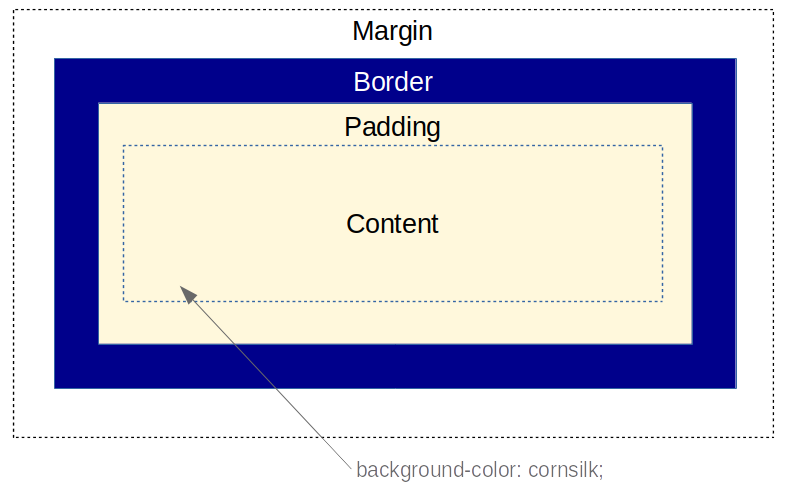
Code CSS:
.styled {
margin: 5px;
border: solid 2px black;
padding: 22px;
background-color: cornsilk;
box-shadow: 10px 5px red;
}
.keyword {
color: red;
font-style: italic;
/* La propriété suivante ne sera pas appliquée car
elle ne s'applique pas aux éléments en ligne : */
height: 300px;
}
Code XHTML:
<div class="styled">
<p>Some <span class="keyword">interesting</span> content in a paragraph.</p>
<p>Another paragraph with more <span class="keyword">highlighted</span> keywords.</p>
</div>
Résultat:
Some interesting content in a paragraph.
Another paragraph with more highlighted keywords.
2. Formats et unités de valeurs CSS
2.1 Quelques unités acceptées par les propriétés margin, padding, width, height et font-size
Ces propriétés CSS (ce ne sont pas les seules) acceptent des valeurs sous forme d'une "longueur".
Cette longueur peut-être spécifiée de manière relative ou absolue.
| Unités absolues | Description |
|---|---|
px | Pixel |
cm, in, mm | Centimètre, Pouce, Millimètre |
pt, pc | Point, Pica |
| Unité relative | Description |
|---|---|
% | Taille relative à l'élément parent |
em | Relative à la taille de police de l'élément |
rem | Relative à la taille de police de l'élément racine |
Remarque: Lors de l'utilisation de la valeur 0 il n'est pas nécessaire de spécifier d'unité.
2.2 Les formats de valeurs acceptés par les propriétés margin et padding
-
padding: 10px 5px 15px 20px;- lecture dans le sens des aiguilles d'une montre
- signifie : top -> 10px, right -> 5px, bottom -> 15px, left -> 20px
-
padding: 10px 5px 15px;- signifie : top -> 10px, right and left -> 5px bottom -> 15px
-
padding: 10px 5px;- signifie : top and bottom -> 10px, right and left -> 5px
-
padding: 10px;- signifie : top, right, left and bottom -> 10px
-
Il est possible d'utiliser les autres unités existantes (
%,em, etc.). -
Il est possible de les spécifier une à une (en utilisant les propriétés
padding-top,padding-right,padding-bottom,padding-left).
2.3 La valeur spéciale "auto"
Lors de l'utilisation de la valeur auto, la valeur calculée pour la propriété en question est ajustée automatiquement en fonction du contenu et/ou du contexte de l'élément concerné.
Cette fonctionnalité peut être très pratique dans certains cas puisqu'elle va permettre :
- de centrer horizontalement les éléments en bloc avec l'utilisation de la déclaration
margin: auto;(les marges, étirées au maximum et de mêmes longueurs de chaque coté de l'élément vont avoir pour effet de le centrer) - d'ajouter une barre de défilement lorsque cela sera nécessaire pour garder le contenu dans l'élément contenant avec l'utilisation de la déclaration
overflow: auto; - d'afficher correctement des images dont la largeur auraient été définie de manière relative au conteneur avec la déclaration
height: auto;
Remarque: seul un petit nombre de propriétés supporte l'utilisation de cette valeur.
3. Tableaux HTML
La construction d'un tableau HTML nécessite l'utilisation de plusieurs balises :
<table> </table>pour délimiter l'ensemble du tableau<thead> </thead>pour désigner les lignes constituant l'en-tête du tableau<tbody> </tbody>pour désigner les lignes constituant le corps du tableau<th> </th>pour désigner une cellule de l'en-tête du tableau<td> </td>pour désigner une cellule du corps du tableau<tr> </tr>pour désigner une ligne de cellules (aussi bien dans l'en-tête que dans le corps du tableau, elle contient donc des élémentstdou des élémentsth)
Ainsi le code d'un tableau simple contenant 2 colonnes et 3 lignes (dont celle de l'en-tête) prendra la forme suivante :
<table>
<thead> <!-- Début de l'en-tête -->
<tr>
<th>Nom colonne 1</th>
<th>Nom colonne 2</th>
</tr>
</thead> <!-- Fin de l'en-tête -->
<tbody> <!-- Début du corps du tableau -->
<tr>
<td>Data ligne 1 - colonne 1</td>
<td>Data ligne 1 - colonne 2</td>
</tr>
<tr>
<td>Data ligne 2 - colonne 1</td>
<td>Data ligne 2 - colonne 2</td>
</tr>
</tbody> <!-- Fin du corps du tableau -->
</table>
4. Listes (ordonnées ou non) en HTML
Il existe deux éléments HTML qui permettent de désigner un liste :
- les balises
<ol> </ol>désignent une liste ordonnée (ordered list) - les balises
<ul> </ul>désignent une liste non-ordonnée (unordered list)
Ces balises délimitent la liste (i.e. l'élément qui contient les items de la liste). Chaque item d'une liste est représenté par la balises <li> </li>.
Ainsi une liste non ordonnée (liste de course par exemple) prendra la forme suivante :
<ul>
<li>Avocat</li>
<li>Citron</li>
<li>Tomate</li>
</ul>
Une liste ordonnée (instructions de directions par exemple) prendra la forme suivante :
<ol>
<li>Tournez à gauche</li>
<li>Continuez 500m puis prendre la contre-allée</li>
<li>Vous êtes arrivé chez le vendeur de fruits et légumes</li>
</ol>
Vous pouvez remarquer que les listes disposent d'un style par défaut. Ce style est modifiable avec la propriété CSS list-style
5. Groupage des éléments et organisation générale d'une page
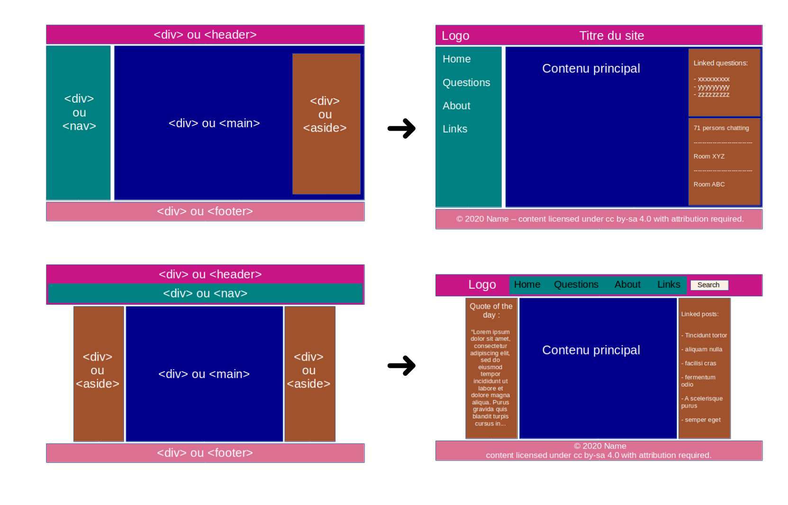
6. Autres propriétés CSS utiles pour ajuster l'organisation de votre page
-
position: permet de spécifier le type de positionnement pour un élément (les valeurs possibles sont :static(par défaut),relative,absolute,sticky,fixed) -
display; permet de spécifier le type de rendu pour un élément (en ligne ou en bloc) et la disposition utilisé pour ses enfants (valeurs utiles :inlineetblockpour définir comment l'élément participe au flux des éléments ;flow,table,flexpour définir comment les éléments s'organisent à l'intérieur ;inline-blockpour obtenir des blocs en ligne à l'intérieur de l'élément ;nonepour ne pas afficher l'élément).
6. Mise en pratique (1)
üöÄ Consignes:
-
Récupérer les données du jour : TP3.zip et extraire le contenu de l'archive sur votre ordinateur
-
Ouvrir la page
index.html(dans votre navigateur et dans votre éditeur de code). Cette page contient déjà plusieurs blocs de texte formattés sous la forme de paragraphes. -
Éditer cette page pour insérer l'image (
prog.png) de l'évolution de la fréquentation de notre centre commercial. -
Éditer cette page pour intégrer le tableau correspondant aux données du fichier
data.csven utilisant l'élément HTMLtable(cette table devra être agréable à lire, vous veillerez donc à l'espacement dans les cellules ainsi qu'à son style : bordure, couleur de la ligne d'en-tête et couleur des lignes qui contiennent les données, etc.) -
Effectuer le reste de la mise en page :
- barre / menu de navigation plus agréable à utiliser (utilisation de règles CSS pour changer l'apparence du lien au survol, pour faire disparaître les 'puces' qui correspondent à chaque item de la liste, etc.)
- pied-de-page contenant votre nom et les mentions légales éventuelles (copyright, etc.)
-
Si le contenu de votre page dépasse la taille de votre écran, vous devrez veiller à ce que votre page ait un comportement approprié (présence de barre de défilement sur le coté, quid du positionnement du menu de navigation, etc.)
-
Vous voulez intégrer un encart contenant une carte permettant de localiser l'emplacement de notre centre commercial. Une des manières les plus simples consiste à utiliser la fonctionnalité appropriée du projet OpenStreetMap. Rendez-vous sur le site www.openstreetmap.org et utilisez la fonctionnalité "Partager" qui permet d'obtenir un code HTML que vous pourrez intégrer à votre page. Ce code HTML contient notamment une balise
<iframe>.- Vous veillerez à ce que l'export inclue le marker indiquant la position de notre centre commercial.
- Vous veillerez à ce que la carte s'insère de manière harmonieuse au reste de la page.
-
Il est maintenant nécessaire d'ajouter une barre de recherche à notre page. Nous n'avons pas encore abordé les éléments HTML permettant de faire saisir des informations à l'utilisateur. Le principal d'entre-eux est l'élément
<input>. Prenez connaissance des différents types de champs qu'il permet de créer en lisant la documentation en ligne : https://developer.mozilla.org/fr/docs/Web/HTML/Element/Input puis ajouter un élément<input>à votre page.- Vous veillerez à ce que cet élément s'insère de manière harmonieuse au reste de la page (localisation dans la barre de navigation, ou dans un panneau latéral par exemple).
- On note que cet élément n'a pour l'instant aucune action et n'est ajouté à la page qu'à des fins d'illustration.
üöÄ Pensez √©galement valider votre code HTML et votre code CSS en ligne : https://validator.w3.org/
Remarque : Vous trouverez ci-dessous plusieurs captures d'écran de styles appliqués au même contenu HTML, celui qui vous êtes censé créer.
Vous pouvez vous en inspirer lors de la réalisation de votre page, mais n'hésitez pas à faire preuve d'imagination !
Exemples
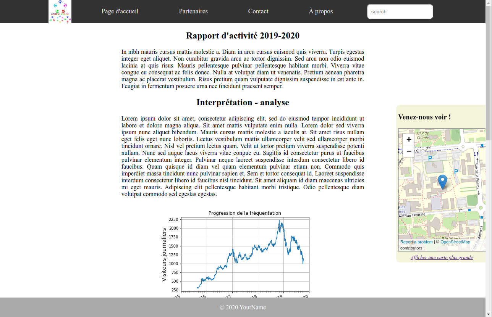
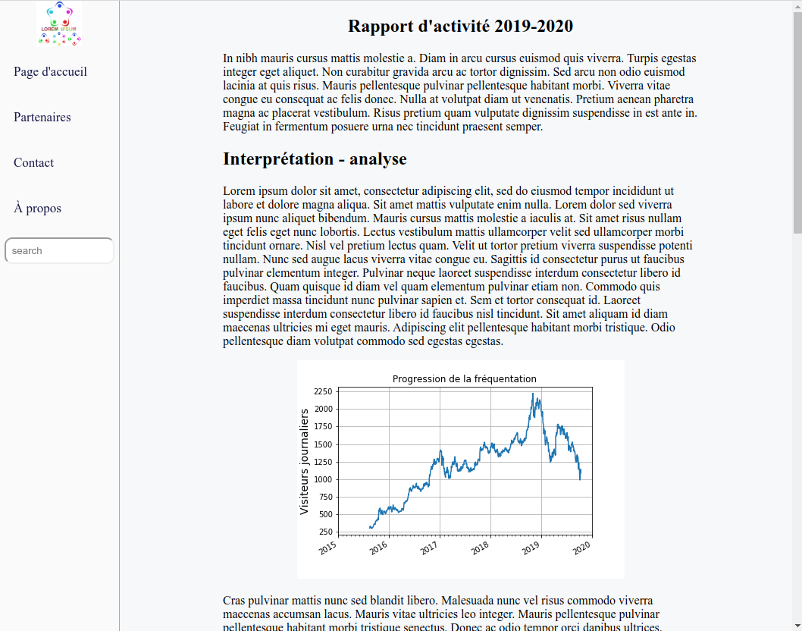
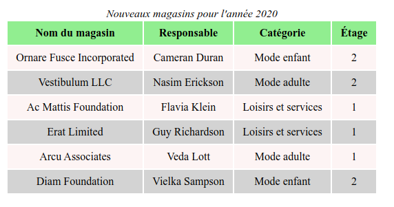
8. Retour sur quelques aspects du positionnement des éléments
8.1 Le centrage d'un élément (dans la page, dans son conteneur, ...)
Ici en définissant une largeur (width) et des marges automatiques (margin: auto) sur un élément en bloc ; puis en demandant à centrer le texte autour de l'axe vertical au sein de cet élément (text-align: center).
Code CSS:
.a {
width: 50%;
padding: 3px;
background-color: lightgreen;
border: solid 1px gray;
}
.b {
margin: auto;
}
.c {
text-align: center;
}
Code XHTML:
<section>
<div class="a">Bloc utilisant la propriété 'width', non centré</div>
</section>
<hr>
<section>
<div class="a b">Bloc utilisant la propriété 'width', centré ('margin:auto')</div>
</section>
<hr>
<section>
<div class="a b c">Bloc utilisant la propriété 'width', centré ('margin:auto') et texte aligné au centre</div>
</section>
Résultat:
8.2 Utilisation de display: inline-block; pour avoir des blocs en ligne :
Les blocs qui utilisent cette propriété vont se comporter comme des éléments en bloc (respect des propriétés width, height, etc.) mais ne vont pas créer de retour à la ligne avant / après l'élément, lui permettant de s'afficher à coté de ses éléments frères.
Code CSS:
.a {
background-color: cornsilk;
border: solid 1px gray;
padding: 4px;
width: 30%;
}
.b {
display: inline-block;
}
Code XHTML:
<div>
<div class="a">Bloc 1</div>
<div class="a">Bloc 2</div>
<div class="a">Bloc 3</div>
</div>
<hr>
<div>
<div class="a b">Bloc 1</div>
<div class="a b">Bloc 2</div>
<div class="a b">Bloc 3</div>
</div>
Résultat:
8.3 L'utilisation de la propriété position pour changer le type de positionnement d'un élément
(voir la démonstration sur https://developer.mozilla.org/fr/docs/Web/CSS/position)
-
positionnement relatif avec
position: relative:- l'élément est décalé à l'aide des propriétés
top,right,left,bottompar rapport à sa position normale dans le flux du document - celà n'affecte pas les boites voisines mais l'élément peut prendre place au dessus de ses éléments frères
- l'élément est décalé à l'aide des propriétés
-
positionnement absolu avec
position: absolute:- l'élément est positionné à l'aide des propriétés
top,right,left,bottom - l'élément est sorti du flux et ne participe plus au positionnement de ses éléments frères
- l'élément est positionné à l'aide des propriétés
-
positionnement fixe avec
position: fixed:- l'élément reste fixe dans la page : il n'est pas affecté par le défilement de la page
- il s'agit d'un positionnement absolu : l'élément est sorti du flux et ne participe plus au positionnement de ses éléments frères
-
positionnement en adhérence avec
position: sticky:- il s'agit d'un positionnement relatif jusqu'à un seuil donné puis l'élément se comporte ensuite comme un élément fixe
La différence de participation au flux des éléments entre sticky et fixed est la raison pour laquelle il pouvait être plus judicieux d'utiliser sticky pour positionner de manière fixe l'élément header ou l'élément footer tout en permettant sa contribution au flux des éléments lors des exercices du TP3.
8.4 La possibilité de faire "flotter" des éléments
La propriété float permet de faire sortir l'élément du flux et de le pousser dans la direction indiquée par la valeur de la propriété (float:right ou float:left).
Ses éléments frères vont venir prendre place autour de lui.
Lorsque l'on souhaite interdire le voisinage avec un élément flottant et reprendre le flux normal du document, on utilise la propriété clear (avec la valeur right, left ou both selon le besoin).
... pour les répartir sur la page (1)
Code CSS:
.s {
text-align: center;
background: lightgreen;
padding: 4px;
}
.left {
float: left;
width: 48%;
}
.right {
float: right;
width: 48%;
}
Code XHTML:
<div class="left s">Bloc de gauche</div>
<div class="right s">Bloc de droite</div>
<div style="clear: both;"></div> <!-- Cela va permettre au titre
en dessous des blocs verts de ne pas venir se coller à eux -->
Résultat:
... pour les répartir sur la page (2)
Code CSS:
.s {
text-align: center;
background: lightgreen;
padding: 4px;
margin: 4px;
border: solid 1px black;
}
.floatbox {
float: left;
width: 22%;
}
Code XHTML:
<div class="floatbox s">1</div>
<div class="floatbox s">2</div>
<div class="floatbox s">3</div>
<div class="floatbox s">4</div>
<div class="floatbox s">5</div>
<div class="floatbox s">6</div>
<div class="floatbox s">7</div>
Résultat:
En savoir plus en vidéos ?
- CSS
- Why isn't this CSS doing anything? (vidéo sur l'utilisation de l'inspecteur de code de Mozilla, en particulier pour voir pourquoi certaines propriétés ne sont pas appliquées, par exemple lors de l'utilisation de
widthsur un élément en ligne) - Testing Color Contrast & Simulating Color Blindness with the Firefox Accessibility Inspector
- Why isn't this CSS doing anything? (vidéo sur l'utilisation de l'inspecteur de code de Mozilla, en particulier pour voir pourquoi certaines propriétés ne sont pas appliquées, par exemple lors de l'utilisation de
Le framework Bootstrap

1. Introduction
Le développement de sites web requiert une très bonne connaissance des langages du web (HTML, CSS, JavaScript), mais leur apprentissage, pour en maitriser tous les aspects, peut être long et difficile.
Des frameworks (ou cadriciels) sont proposés pour faciliter cette tâche. Un framework est une collection de briques de code bien structurées et prêtes à l'emploi permettant de faciliter le développement et la maintenance d'un projet informatique. L'un des plus utilisés est Bootstrap.
Bootstrap est un kit CSS, incluant aussi des composant HTML et javascript, créé par les développeurs de Twitter. Il est devenu le framework CSS de référence et est disponible en open source. Au 09/01/2023, la dernière version est la v5.3.0-alpha1 (la version 4.6.1 est la dernière mise-à-jour en v4.x).
Ce framework :
- facilite l'utilisation des règles CSS pour concevoir des sites attractifs et adaptatifs (Responsive Web Design)
- utilise une grille d'affichage pour agencer les différentes boîtes d'affichage des sites et s'adaptant immédiatement différents type de supports (ordinateurs, tablettes, smartphones)
1.1 Avantages
- portabilité (cross-browser) : présentation similaire quel que soit le navigateur
- homogénéité : ensemble de styles prédéfinis partagés, éléments complémentaires (barres de navigation, boutons...) uniformisés
- simplicité : système de grille pour positionner des éléments
- adaptabilité (responsive) : par défaut l'affichage s'adapte à la taille de l'écran (mobile-first)
- facilité d'utilisation : avec des connaissances de base en HTML et CSS
Remarque: D'autres framework CSS connus sont par exemples Foundation, Bulma ou Semantic UI. Ils proposent des fonctionnalités similaires.
1.2 Utilisation
Pour utiliser Bootstrap dans une page HTML il faut inclure un ou plusieurs des fichiers distribués : http://getbootstrap.com/getting-started/. Plusieurs approches peuvent être utilisées pour inclure le(s) fichier(s) nécessaires (elles offrent différentes options et/ou correspondent à différents contextes de travail) :
-
Téléchargement en local des fichiers distribués depuis le site Web de Bootstrap et inclusion dans la page HTML de manière habituelle : l'archive zippée proposée est décompressée et vous faites référence (par des liens relatifs) à ces fichiers dans votre document HTML.
-
Utilisation d'un CDN (Content Delivery Network - réseau de diffusion de contenu), une infrastructure de serveurs "qui coopèrent afin de mettre à disposition du contenu ou des données à des utilisateurs". Ce procédé permet d'optimiser le temps de chargement (performance des serveurs contactés, mise en cache du contenu par le navigateur Web, diminution de la charge du serveur servant le reste de la page, etc.). L'inclusion dans la page HTML est similaire, il suffit simplement d'utiliser l'URL d'un de ces CDN :
<head>
<link
href="https://cdn.jsdelivr.net/npm/bootstrap@5.3.0-alpha1/dist/css/bootstrap.min.css"
rel="stylesheet"
integrity="sha384-GLhlTQ8iRABdZLl6O3oVMWSktQOp6b7In1Zl3/Jr59b6EGGoI1aFkw7cmDA6j6gD"
crossorigin="anonymous">
</head>
- Utilisation d'un gestionnaire de paquets Javascript (
npm, node package manager, par exemple) - cette solution ne sera par abordée dans le cadre de ce TP.
Remarque: Dans le cadre des premières parties de ce TP nous n'aborderons pas les fonctionnalités JavaScript offertes par Bootstrap et nous n'inclurons donc que le fichier CSS qui est distribué. Pour utiliser ses fonctionnalités Javascript, vous devriez inclure le fichier javascript de Bootstrap (
bootstrap.js).
2. Le système de grille
Documentation officielle :
2.1 En théorie
Une des difficultés avec HTML + CSS est la maîtrise du placement des éléments dans une page.
Pour faciliter celui-ci Bootstrap propose un système de grille (grid) composée de 12 colonnes (col), et d’un nombre de lignes (row) potentiellement illimité. Les élements de contenu sont placés dans cette grille, en utilisant une ou plusieurs de ses cellules.
Ce système de dimensionnement à les propriétés suivantes :
-
la largeur des colonnes est exprimée en % de la largeur de la fenêtre de visualisation
-
la hauteur des lignes est fixée par la hauteur de son contenu et prend la hauteur du plus gros élément qu'elle contient

La puissance de Bootstrap réside dans le fait que le système de grille est responsive :
Les colonnes d'une même ligne se réorganisent automatiquement selon la largeur de la fenêtre d'affichage : si la fenêtre est suffisamment large, elles sont côte à côte, sinon elles s'empilent.
Il est également possible de jouer sur la taille des contenus, voir de les faire disparaître.
2.2 En pratique
2.2.1 Les classes à utiliser
On utilise ce système de grille grâce à des classes CSS particulières qui vont être associées à des éléments HTML pour déterminer leur largeur en nombre de colonnes.
Concrètement il va falloir :
-
un conteneur (
<div>,<section>, ..) ayant la classe :containerpour une grille de largeur fixe (définit selon les tailles d'écrans), centrée sur la page, ou biencontainer-fluidpour une grille occupant toute la largeur de l'écran (width: 100%), ou biencontainer-{breakpoint}pour une grille occupant toute la largeur de l'écran jusqu'au breakpoint définit.
-
définir une ligne avec la classe
row -
définir une colonne de la ligne avec
col-{breakpoint}-{width}- o√π
breakpointcorrespond à la largeur d'écran au dessous de laquelle l'élément s'empile avec ses frères :sm,md,lg,xlouxxl, - où
widthcorrespond à la largeur de la colonne, en nombre de colonnes élémentaires, de 1 à 12.
- o√π
Exemple:
<div class="container">
<div class="row">
<div class="col-sm-4">One of three columns</div>
<div class="col-sm-4">One of three columns</div>
<div class="col-sm-4">One of three columns</div>
</div>
<div class="row">
<div class="col-lg-6">One of two columns</div>
<div class="col-lg-6">One of two columns</div>
</div>
<div class="row">
<div class="col-md-2">Third row, 1st column</div>
<div class="col-md-7">Third row, 2nd column</div>
<div class="col-md-3">Third row, 3rd column</div>
</div>
</div>
Résultat:
2.2.2 Point de rupture
|
Extra small <576px |
Small ‚â•576px |
Medium ‚â•768px |
Large ‚â•992px |
X-large ‚â•1200px |
XX-large ‚â•1400px |
|
|---|---|---|---|---|---|---|
| Max container width | None (auto) | 540px | 720px | 960px | 1140px | 1320px |
| Class prefix | .col- |
.col-sm- |
.col-md- |
.col-lg- |
.col-xl- |
.col-xxl- |
| # of columns | 12 | |||||
| Gutter width | 1.5rem (.75rem on each side of the column) | |||||
| Nestable | Yes | |||||
| Column ordering | Yes | |||||
2.2.3 Illustration de l'effet des breakpoints
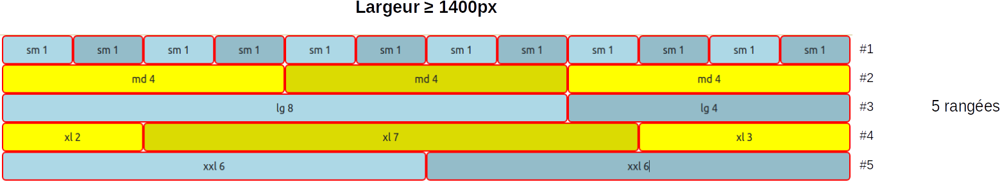
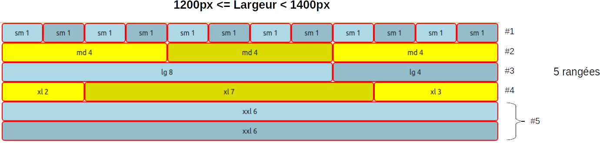
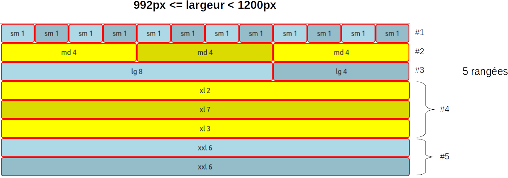


Version interactive : ici.
2.2.4 Possibilité de ne pas spécifier la largeur pour des colonnes de mêmes tailles :
Exemple:
<div class="container">
<div class="row">
<div class="col-sm">One of three columns</div>
<div class="col-sm">One of three columns</div>
<div class="col-sm">One of three columns</div>
</div>
<div class="row">
<div class="col-lg">One of two columns</div>
<div class="col-lg">One of two columns</div>
</div>
<div class="row">
<div class="col-md-2">Third row, 1st column</div>
<div class="col-md-7">Third row, 2nd column</div>
<div class="col-md-3">Third row, 3rd column</div>
</div>
</div>
Résultat:
2.2.5 Utilisation sans spécifier de point de rupture :
Exemple:
<div class="container">
<div class="row">
<div class="col">One of seven columns</div>
<div class="col">One of seven columns</div>
<div class="col">One of seven columns</div>
<div class="col">One of seven columns</div>
<div class="col">One of seven columns</div>
<div class="col">One of seven columns</div>
<div class="col">One of seven columns</div>
</div>
<div class="row">
<div class="col">One of two columns</div>
<div class="col">One of two columns</div>
</div>
<div class="row">
<div class="col-md-2">Third row, 1st column</div>
<div class="col-md-7">Third row, 2nd column</div>
<div class="col-md-3">Third row, 3rd column</div>
</div>
</div>
Résultat:
3. Autres composants de Bootstrap
Ce framework permet également, toujours par l'utilisation de classes qu'il définie, d'appliquer des styles cohérents à un certain nombre d'éléments html (img, button, input, etc.) ainsi que de composer des éléments plus complexes (dropdown menus, navbar, etc.).
3.1 Intégration d'images responsive
Documentation officielle :
Comme avec le système de grille, il va être possible d'appliquer simplement aux images des classes CSS qui vont permettre de faciliter leur intégration dans une page responsive. Quelques-unes des classes utilisables sont les suivantes :
- la classe
img-fluidpermet de rendre l'image responsive, - la classe
img-thumbnailpermet de rendre l'image responsive et de lui ajouter une marge arrondie de 1px (effet vignette), - la classe
roundedpermet d'arrondir les angles de l'image, - la classe
rounded-circlepermet de découper l'image selon une ellipse.
3.2 Un composant simple : le bouton
Documentation officielle :
Ces éléments peuvent être facilement combinés pour en créer de plus complexes, comme ici avec :
Bouton contenant un badge :
Code HTML:
<button type="button" class="btn btn-primary">
Notifications <span class="badge badge-light">4</span>
</button>
Résultat:
Groupe de 3 boutons sans se soucier des angles à arrondir :
Code HTML:
<div class="btn-group" role="group" aria-label="Basic example">
<button type="button" class="btn btn-secondary">Left</button>
<button type="button" class="btn btn-secondary">Middle</button>
<button type="button" class="btn btn-secondary">Right</button>
</div>
Résultat:
4. Mise en pratique - Exercice 1
üöÄ Consignes:
-
Récupérer les données du jour : TP4.zip et extraire le contenu de l'archive sur votre ordinateur.
-
Ouvrir la page
page_bootstrap1.html(dans votre navigateur et dans votre éditeur de code). Cette page contient déjà plusieurs blocs de texte formatés sous la forme de paragraphes et organisés dans 3<article>et dans 2<section>. -
Inclure le fichier CSS de bootstrap dans la section
headdu document HTML en utilisant un CDN :
<head>
...
<link
href="https://cdn.jsdelivr.net/npm/bootstrap@5.3.0-alpha1/dist/css/bootstrap.min.css"
rel="stylesheet"
integrity="sha384-GLhlTQ8iRABdZLl6O3oVMWSktQOp6b7In1Zl3/Jr59b6EGGoI1aFkw7cmDA6j6gD"
crossorigin="anonymous">
...
</head>
-
On souhaite organiser la page en utilisant le système de grille de Bootstrap présenté précédemment afin qu'elle présente son contenu de manière responsive. Les instructions concernant le style des éléments et le comportement relatif à la taille de la fenêtre du navigateur sont présentées ci-dessous :
- les articles doivent être affichés sur un fond de couleur
aliceblue, avoir des bords arrondis (border-radius) à une longueur de 10px, et utiliser une marge interne (padding) de 12.5 pixels. - les articles doivent être placés sur une même ligne et occuper une largeur identique si la largeur de la fenêtre est plus grande ou égale à 768 pixels, sinon ils s'empilent. Lorsqu'ils s'empilent ils doivent être séparés d'un espace de 10px.
- les sections doivent être affichées sur un fond de couleur
cornsilk, avoir des bords arrondis (border-radius) à une longueur de 10px, et utiliser une marge interne (padding) de 8 pixels. - les sections doivent être placées sur une même ligne et occuper une largeur identique si la largeur de la fenêtre est plus grande ou égale à 768 pixels, sinon elles s'empilent. Lorsqu'ils s'empilent ils doivent être séparés d'un espace de 10px.
- les articles doivent être affichés sur un fond de couleur
Pour cet exercice comme pour les deux suivants, vous écrirez vos règles CSS directement dans le fichier HTML, entre les balises <style> </style> à insérer dans l'en-tête du document (cf. TP2).
Le résultat attendu est présenté ci-dessous.
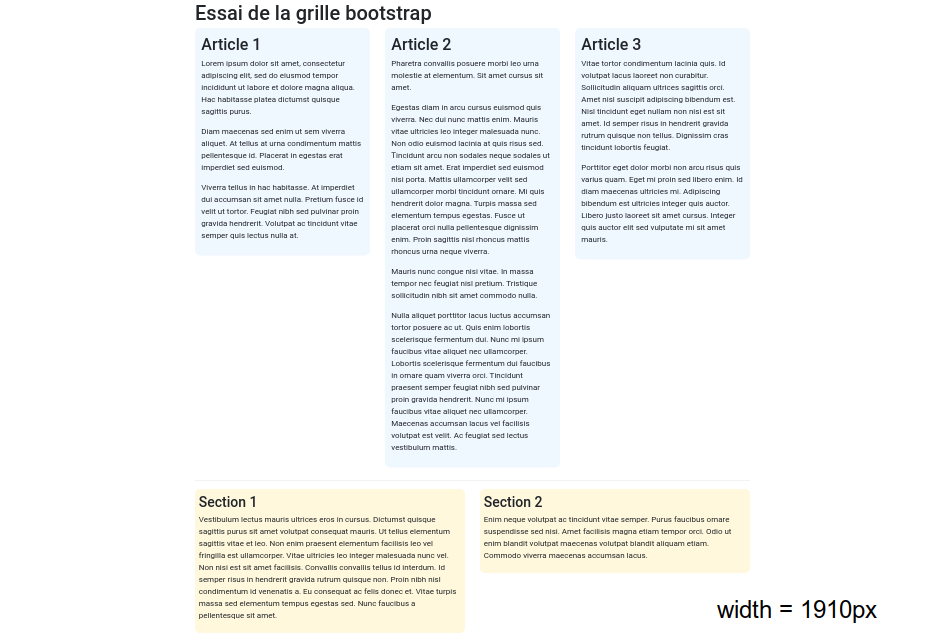 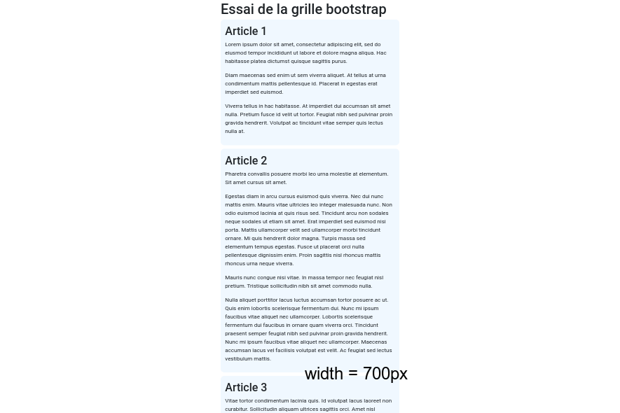
5. Mise en pratique - Exercice 2
üöÄ Consignes:
-
Copiez la page
page_bootstrap1.htmlverspage_bootstrap2.html. C'est sur ce nouveau document que vous travaillez désormais. -
Modifier le document de manière à ce que, lorsque la largeur de la fenêtre est supérieure à 768px, les articles occupent respectivement 25%, 50% et 25% de la largeur de la page.
-
Veillez à ce que le texte des articles et des sections soit désormais justifié.
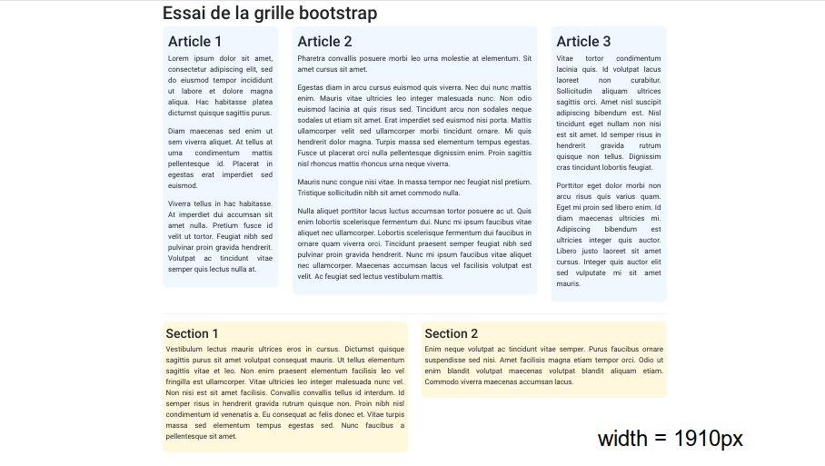
5. Mise en pratique - Exercice 3
üöÄ Consignes:
-
Copiez la page
page_bootstrap2.htmlverspage_bootstrap3.html. C'est sur ce nouveau document que vous travaillez désormais. -
Nous souhaitons intégrer les images qui correspondent à nos 3 articles. Elles doivent s'insérer de manière harmonieuse avec l'article correspondant. Les images à utiliser sont les suivantes :
- https://upload.wikimedia.org/wikipedia/commons/c/cc/ESC_large_ISS022_ISS022-E-11387-edit_01.JPG (Vue aérienne de l'aéroport international de Hobart en Tasmanie)
- https://upload.wikimedia.org/wikipedia/commons/7/73/MatanuskaGlacierPanorama.jpg (Le glacier Matanuska en Alaska)
- https://upload.wikimedia.org/wikipedia/commons/1/15/Ile-large-2017-port.jpg (Vue aérienne de l'île du Large)
Veillez à ce que la première et la troisième image présentent un effet de vignette. La seconde image devra être découpée selon une forme d'ellipse.
-
Centrez le titre de la page.
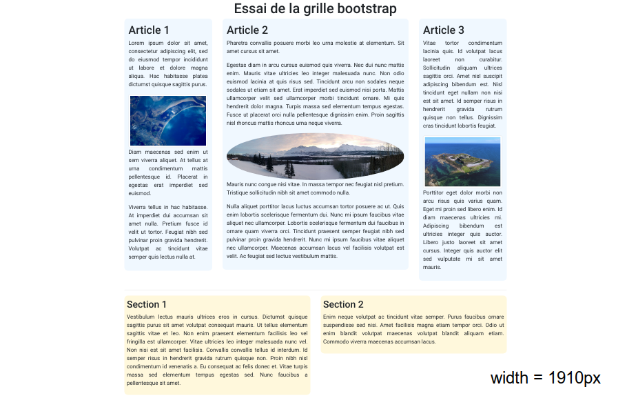
6. Des composants plus complexes : navbar, dropdown menu, etc. - Exercice 4
Les exemples précédents ont pour vocation de fournir une introduction à la manière dont fonctionne Bootstrap.
Certaines de ses fonctionnalités nécessitent l'ajout d'une dépendance Javascript propre à Bootstrap.
Vous devez l'inclure dans votre fichier HTML, en utilisant la balise <script>, de préférence à la fin de l'élément <body>.
En utilisant l'approche CDN :
<body>
<!--
Le contenu habituel de votre page ici ...
-->
<script
src="https://cdn.jsdelivr.net/npm/bootstrap@5.3.0-alpha1/dist/js/bootstrap.bundle.min.js"
integrity="sha384-w76AqPfDkMBDXo30jS1Sgez6pr3x5MlQ1ZAGC+nuZB+EYdgRZgiwxhTBTkF7CXvN"
crossorigin="anonymous">
</script>
</body>
Vous pouvez maintenant bénéficier de certains éléments de Bootstrap qui nécessitent ces fonctionnalités Javascript, et ce sans saisir de code Javascript supplémentaire (sauf si nécessaire). C'est par exemple le cas des barres de navigation et des menus déroulants.
-
Copiez la page
page_bootstrap3.htmlverspage_bootstrap4.html. C'est sur ce nouveau document que vous travaillez désormais. -
Votre page inclue déjà le fichier CSS de Bootstrap. Vous devez maintenant inclure la bibliothèque Javascript requises (
Bootstrap.js) dans votre page comme montré dans l'extrait de code précédent. -
Rendez-vous sur la page de documentation des barres de navigation : https://getbootstrap.com/docs/5.3/components/navbar/
-
Essayer d'inclure une barre de navigation noire contenant les entrées suivantes :
Accueil,Partenaires,ContactetÀ propos(ce sont les mêmes intitulés que dans le TP3) ainsi qu'un élément permettant d'effectuer une recherche. Fiez-vous aux exemple de la documentation de Bootstrap. Cette barre de navigation devra être responsive, lorsque la largeur de l'écran est inférieure à 992px, elle doit disparaître au profit de l'élément qui permet de la déplier (voir exemple ci-dessous).
Vous pouvez également chercher dans la documentation comment faire en sorte que l'élément de recherche et son bouton forment un groupe comme sur le screenshot ci-dessous (ce n'est à priori pas le comportement que vous avez par défaut mais bootstrap propose des classes permettant de faire ça facilement).
Largeur d'écran: 1250px

Largeur d'écran: 620px

- Si vous avez réussi avec succès les questions précédentes c'est que vous maîtrisez déjà bien la documentation de Bootstrap. Essayer d'ajouter à la page en cours une fenêtre modale dont l'ouverture serait déclenchée par un clic sur un bouton. L'ensemble des informations sont présentes dans la documentation. Vous êtes libre de choisir le contenu de la fenêtre modale ainsi que la manière dont le lien entre le bouton et la fenêtre modale est défini dans votre code.
Introduction au langage Javascript
1. Préambule
Le Javascript est aujourd’hui un langage incontournable du développement Web.
C'est un langage de programmation multi-paradigme : orienté objet à prototype, impératif et fonctionnel (il partage ces deux dernières caractéristiques avec Python par exemple).
Le langage a été créé Netscape (fin 1995) est standardisé sous le nom d'ECMAScript (c'est peut-être un terme que vous rencontrerez - notamment sous sa forme abrégée pour désigner les différentes versions du standard : ES5, ES6, etc.).
Sa syntaxe est dérivée de celle du C/C++.
for (let i = 0; i < 10; i++) {
console.log("Iteration n°" + i);
}
var j = 0;
while (j < 10) {
console.log("...");
j++;
}
Ses autres particularités sont les suivantes :
- Langage interprété (pas de compilation, exécution directe dans un interpréteur)
- Typage dynamique (laisse l'ordinateur réaliser l'opération de typage à la volée)
- Modèle objet à base de prototypes
- Langage fonctionnel (les fonctions sont des objets de première classe : on peut passer des fonctions en argument à des fonctions, les assigner à des variables, les stocker dans des structures de données, etc.)
Pourquoi le JavaScript ?

- Couche "Comportement" (JavaScript) qui s'ajoute naturellement à la couche "Présentation" (CSS) et à la couche "Contenu structuré" (HTML) des technologies web.
- Création de contenus complexes, dynamiques et interactifs dont la logique est exécutée coté client, le moment venu.
- Les navigateurs web disposent de plusieurs API (Application Programming Interfaces) qui permettent de manipuler le document (API DOM), de manipuler des contenues 2D ou 3D (API Canvas et API WebGL) ou les informations de géolocalisation (API Geolocation) par exemple ; ces API sont accessibles en JavaScript.
1.1 Quelques idées reçues
-
JavaScript n'est pas à proprement parlé le seul langage du Web. En effet d'autres solutions ont été développées pour s’exécuter coté client (c'est par exemple le cas de Adobe Flash ou des applets Java - désormais tombés en désuétude). En revanche, avec la normalisation du langage et un meilleur support par tous les navigateurs et avec l'introduction de HTML5 (et de ses nombreuses API JavaScript), le Javascript a effectué un retour en force dans l'écosystème Web coté client. Il existe également un language de bas niveau développé pour le Web et standardisé en 2019, nommé WebAssembly.
-
Le Javascript n'est pas seulement utilisé coté client mais également de plus en plus comme un langage de script à part entière, notamment depuis l'existence de node.js (vers 2009), ou, plus récemment de Deno (2018). Il est ainsi désormais possible de l'utiliser également pour écrire du code côté serveur. Ce point ne sera pas abordé dans ce cours.


1.2 Environnements d'exécution JavaScript
Un environnement d'exécution Javascript est composé d'un moteur d'exécution JavaScript (runtime) et d'objets JavaScript spécifiques à l'environnement en question.
Les principaux environnement d'exécutions sont les navigateurs Web (Chrome utilise le moteur V8, Firefox utilise SpiderMonkey et Safari utilise WebKit).
Node.js est un environnement d’exécution célèbre (utilisant lui aussi le moteur V8) qui n'est lié à un aucun navigateur Web ; il permet ainsi l'exécution de code Javascript hors du contexte du navigateur.
1.3 Intégration dans une page HTML
-
L'intégration de code JavaScript se fait au moyen de la balise
<script> </script>. -
Elle peut se faire à deux endroits de la page HTML : dans l'en-tête ou dans le corps de la page HTML.
-
Le chargement et l'exécution de ces scripts respecte l'ordre d'apparition dans la page.
<html>
<head>
<script>
// Code Javascript Ici
</script>
<script src="monScript.js"></script>
</head>
<body>
<header>Contenu ...</header>
<main>
Contenu de la page
</main>
<footer>Contenu ...</footer>
<script>
// Code Javascript Ici
</script>
<script src="unAutreScript.js"></script>
</body>
</html>
Remarque:
- Les scripts placés dans l'en-tête (
<head>) sont exécutés avant la construction et l'affichage de la page.- Les script placés dans le corps (
<body>) sont exécutés au fur et à mesure que la page HTML est lue et que le DOM se construit.
Comme pour l'ajout de règles CSS, il existe donc bien deux manières (rédactions du code JavaScript dans la page HTML ou inclusion d'un fichier externe) d'intégrer un script JavaScript.
1.4 La manière dont ça fonctionne ?
- Écriture : Vous créez vos pages HTML et votre code JavaScript (que vous mettez dans le fichier HTML et/ou dans un ou plusieurs fichiers)
- Chargement : Le navigateur retrouve et charge la page en analysant (parsing) son contenu de haut en bas. Lorsque le navigateur rencontre du code JavaScript il l'analyse, vérifie sa correction puis l'exécute. Le navigateur construit un modèle interne de la page HTML : le DOM
- Exécution : Le navigateur affiche la page. JavaScript continue à s'exécuter, en utilisant le DOM pour examiner la page, la modifier, recevoir des événements depuis celle-ci, ou pour demander au navigateur d'aller chercher d'autres données sur le serveur web.
1.5 Quel intérêt d'utiliser de la programmation côté client avec JavaScript ?
-
Vérification des données saisies (-> n'envoyer au serveur que les valeurs correctes)
-
Réduire les traitements sur le serveur (pour diminuer sa charge par exemple)
-
Réduire les coûts de communication
-
Pouvoir modifier la présentation (animation, etc.) sans avoir recours au serveur
De manière générale : améliorer l'interactivité et diminuer les temps de réponse.
1.6 Votre environnement de travail
Vous utiliserez les mêmes outils (éditeur de code de votre choix et navigateur Web) que lors des premières séance de TP.
Comme lors des autres séances il est indispensable de travailler avec la fenêtre des outils pour développeurs (DevTools - accessible avec F12) de votre navigateur - celui-ci comprend en effet une console JavaScript.
2. Les base du langages
Liens utiles sur le JavaScript:
- Mozilla Developpers Network - Premier pas en JavaScript : https://developer.mozilla.org/fr/docs/Learn/JavaScript/First_steps
- W3schools Javascript Tutorial : https://www.w3schools.com/js/
- Eloquent JavaScript - 3rd edition (online, PDF, E-PUB, etc.) : https://eloquentjavascript.net/
- Pour se faire la main en JavaScript il faut pratiquer... des exercices comme ceux de W3schools puis des sites comme JavaScript30 peuvent donner de bonnes occasions de pratiquer !
De manière générale, si vous cherchez sur le Web en décrivant explicitement votre problème (et optionnellement en anglais), vous devrez trouver facilement la solution (StackOverflow, Mozilla Developpers Network, W3schools, etc.).

2.1 Éléments de base pour JavaScript dans le navigateur
üöÄ Ouvrez un navigateur et une console JavaScript et saisissez les commandes qui suivent une-√†-une (validation avec Enter) et observez bien le r√©sultat! (nous verrons plus tard √† quoi correspondent document et window)
console.log("Contenu du message à afficher");
document // Pour manipuler des objets sur la page
// Ne va pas fonctionner si aucun élément de la page n'a cet id !
// Trouver l'id d'un élément de la page et modifiez le de la manière suivante !
document.getElementById('myElem').innerHTML = "New content !"
// Ne va pas fonctionner si aucun élément de la page n'a cet id !
// Trouver l'id d'un élément de la page et modifiez le de la manière suivante !
document.querySelector('#myElem').innerHTML = "New content !"
// Ne va pas fonctionner si aucun élément 'div' n'a cette classe !
// Trouver la classe d'un élément sur la page pour modifier son contenu.
document.querySelector('div.myClass').innerHTML = "New content too !"
document.title // Le titre de la page (celui que vous écrivez dans <head><title>)
window // Objet relatif à la fenêtre
window.alert("Contenu de l'alerte !") // ouvre une fenêtre d'alerte
window.innerHeight // renvoie un entier, la hauteur de la fenêtre
window.innerWidth // renvoie un entier, la largeur de la fenêtre
window.screen // renvoie un Object JavaScript contenant des informations sur l'écran
// Un Object décrivant l'URL actuelle du document
window.location
// On accède à la propriété 'href' de cet objet
// ... c'est la chaîne de caractère qui correspond à l'URL actuelle:
window.location.href
2.2 Variables
2.2.1 Définition
En informatique, les variables sont des symboles qui associent un nom (l'identifiant) à une valeur.
Elles sont utilisées pour stocker des données dans la mémoire de l'ordinateur (on associe une valeur à un nom de variable).
2.2.2 Types
Vous rencontrerez deux types de variables :
-
types primitifs :
Boolean: deux valeurs littéralestrueetfalseNumber: nombres entiers ou flottants (1,3.14, etc.) et des valeurs particulières (Infinity,-Infinity,NaN)String: chaînes de caractères ("Salut !",'Hello')
-
variables de type objet (par exemple
Arraypour un tableau ouObjectpour stocker des paires de clés/valeurs) -
types spéciaux :
undefined(possède une unique valeur,undefinedet décrit une variable dont le contenu n'a jamais été initialisé)null(possède une unique valeur,nullet spécifie qu'une variable a bien été initialisée mais qu'elle ne point sur aucun objet)
Regardons en détails comment cela fonctionne.
2.2.3 Déclaration d'une variable
Les instructions qui suivent peuvent être saisies dans la console JavaScript de votre navigateur :
// On peut déclarer un variable sans lui affecter de valeur:
var a; // équivalent à `var a = undefined;`
var b, c;
console.log(a); // undefined
// Affectation avec la forme littérale
// (chaîne de caractère, entier, réel)
a = "Coucou";
b = 1;
c = 3.14;
// On peut affecter une valeur lors de la déclaration
var d = "Hello";
// On peut ensuite affecter une valeur d'un autre type
d = 12;
// Tableau d'entiers (forme littérale)
var myTableau = [1, 2, 3, 4];
var tableauVide = [];
var tableauVide = new Array(); // Identique à l'écriture précédente
// Un tableau peut contenir
// Objet JavaScript (forme littérale)
var myObj = {
"rate": 5,
"comment": "Awesome place ! Great Food !"
};
var autreObj = {};
var autreObj = new Object(); // Identique à l'écriture précédente
// Ces objets ont des méthodes :
var nb = 12;
var txt = nb.toString(); // Renvoie "12"
console.log(txt.length); // 2
On accède ainsi aux propriétés (attributs, méthodes) d'un object en utilisant un accesseurs de propriété. Cela permet de fournir un accès aux propriétés d'un objet en utilisant une notation avec un point ou une notation avec des crochets.
Remarque: Historiquement la déclaration de variable se fait avec
var. Depuis ES6 la bonne pratique est d'utiliserletouconst. Cette fonctionnalité est maintenant supportée par les différents navigateurs Web.
const:
const myConst = 12;
// On ne peut pas faire :
myConst = 15; // TypeError : invalid assignement to const 'myConst'
let:
let isValid = false;
// later in your code :
isValid = true;
Par ailleurs, il est possible de déterminer le type d'une variable en utilisant l'opérateur typeof :
var v0;
console.log(typeof v0); // undefined
var v1 = 12;
console.log(typeof v1); // number
var v2 = "Hello";
console.log(typeof v2); // string
var v3 = [1, 2, 3];
console.log(typeof v3); // object
var v4 = {"clé": "valeur"};
console.log(typeof v4); // object
var v5 = null;
console.log(typeof v5); // object
2.2.4 Règles de nommage des variables
- Pas d'espace, d’opérateurs arithmétiques (
+,-,/,*) ou de caractère de ponctuation (.,,,;) - Des lettres, des chiffres,
_ou$ - Ne peuvent pas commencer par un chiffre
- Noms sensibles à la casse
nomUtilisateur≠nomutilisateur - Interdiction d’utiliser des mots clés réservés JS (ex., if, then, else)
- Choisir des noms descriptifs (par exemple pour une variable correspondant au prix unitaire d'un produit, utiliser
prixUnitaireplutôt queu) - utiliser camelCase pour joindre des mots multiples dans un nom de variable (première lettre du premier mot en minuscule, première lettre des mots suivants en
majuscule :
nomUtilisateurplutôt quenom_utilisateur)
2.3 Opérateur arithmétiques, logiques et de comparaison
-
+,-,*,/,% -
++,-- -
==,!=,>,<,>=,<=... mais aussi===et!== -
||(pensez àoren Python),&&(pensez àanden Python),!(pensez ànoten Python)
Attention à la différence entre == et != d'une part et === et !== d'autre part...!
-
==égalité -
!=différence -
===égalité de valeur et de type -
!==différence de valeur ou de type
Ainsi :
'0' == 0 // true
'0' === 0 // false
null == undefined // true
null === undefined // false
On voit que l'opérateur == effectue des conversions de type avant de tester l'égalité / la différence. De manière générale, utilisez === et !== plutôt que == et !=, car c'est généralement ce que vous voulez.
2.4 Contrôle du flux d'exécution
-
Lorsque le navigateur web rencontre du code JavaScript il l'exécute dans l'ordre d'apparition (à quelques exceptions qui ne sont pas abordées).
-
Contrairement au Python, l'indentation ne joue pas de rôle dans la logique du code (cela ne veut pas dire qu'il ne faut pas respecter certaines règles! pensez à la lecture du code par vous ou d'autres développeurs!)
-
Instructions conditionnelles :
if,else,else ifswitch -
Instructions itératives :
for,while
Exemple 1:
// Pour i=0, tant que i inférieur à 35, et sachant qu'on incrémente i après chaque exécution du bloc ...
for (let i = 0; i < 35; i++) {
// Un message est écrit dans la console en fonction de la valeur de "i"
if (i < 12) {
console.log('La valeur de la variable "i" est actuellement inférieure à 12 !');
} else if (i < 25) {
console.log('La valeur de la variable "i" est actuellement inférieure à 25 (mais supérieure ou égale à 12) !');
} else {
console.log('La variable "i" vaut au moins 25 maintenant !')
}
}
Exemple 2
var i = 0; // On déclare la variable utilisée dans le test
// Le contenu du bloc va s'exécuter tant que la condition est valide
while (i < 5) {
console.log('Je suis dans l\'itération n' + i);
// On incrémente (i.e. on ajoute 1 à) la variable 'i'
i++;
}
Exemple 3
// Définition d'une fonction créant un paragraphe
// et l'ajoutant à la fin de la page
// (la fonction est définie, on pourra l'utiliser avec son nom 'createParagraph'
// mais elle n'est pas exécutée lors de sa définition, seulement lorsqu'elle
// sera invoquée par la suite).
function createParagraph() {
let para = document.createElement('p');
para.textContent = 'You clicked the button!';
document.body.appendChild(para);
}
// Créé un tableau référençant tous les éléments 'button':
let buttons = document.querySelectorAll('button');
// Utilisation d'une boucle pour parcourir le tableau dans son ensemble
for(let i = 0; i < buttons.length ; i++) {
// Ajoute un "click event listener" sur chaque bouton
// lors du clic, la fonction 'createParagraph'
// sera appelée:
buttons[i].addEventListener('click', createParagraph);
}
2.5 Commentaires
/*
Commentaire
multi lignes ...
*/
var a = 12;
// Commentaire sur une seule ligne
2.6 Fonctions
On a vu un exemple de fonction dans la partie 2.4. Il existe plusieurs syntaxe pour définir une fonction appelée addition, par exemple :
function addition(a, b) {
return a + b;
}
et
var addition = function (a, b) {
return a + b;
}
On pourra ensuite appeler cette fonction (ici elle attend donc 2 arguments) et stocker la valeur de retour dans une variable :
var resultat = addition(30, 20);
console.log(resultat); // 50
On notera qu'une fonction peut être donnée en argument à une autre fonction.
function multAdd(a, b, c, addFunction) {
return addFunction(a * b, c);
}
multAdd(2, 3, 4, addition); // 10
2.7 Portée (scope) des variables
-
Les variables peuvent avoir une portée globale ou locale.
-
En JavaScript, la portée d'une variable est définie par son emplacement dans le code source (elle apparaît de façon lexicale).
-
Une variable globale est définie partout dans le script. Elle a une portée globale.
-
Une variable déclarée à l'intérieur d'une fonction n'est définie que dans le corps de ceIe fonction. Elle est une variable locale et elle a une portée locale. C'est cela qu'on appelle "portée de fonction". On note toutefois qu'avec
letetconstil est aussi possible d'avoir uneportée de bloc. -
Les paramètres d'une fonction sont aussi des variables locales et elles ne sont définis que dans le corps de la fonction.
-
Une variable affectée mais non déclarée est considérée comme une variable globale. Par conséquent, même si on peut éviter d'utiliser
varquand on écrit du code dans la portée globale, pour déclarer les variables locales, il faudra toujours utiliservar,letouconst.
Exemple : portée de fonction
function addition(a, b) {
// 'a' et 'b' sont des variables locales,
// elles n'existent qu'au sein de la fonction 'addition'
return a + b;
}
console.log(a); // undefined
var resultat = addition(12, 13);
console.log(a); // undefined
Exemple : portée de bloc
function mult(a, b) {
// 'res' est une variable locale, elle n'est valable que
// dans le bloc définit par la fonction 'mult'
let res = 0;
for (let i = 0; i < b; i++) {
res += a;
// Ici la variable 'i' est définie
}
// Ici on a quitté le bloc, la variable 'i' est 'undefined'
return res;
}
Exemple : variable globale
var monNom = 'Matthieu';
// On pourra utiliser cette variable au sein de n'importe quelle fonction
// ou de n'importe quel bloc du script, elle est globale ...
function mult(a, b) {
// ... alors que 'a' et 'b' sont des variables locales
let res = 0;
for (let i = 0; i < b; i++) {
res += a;
}
return monNom + " a calculé que " + a + " * " + b + " est égal à " + res;
}
mult(12, 12) // 'Matthieu a calculé que 12 * 12 est égal à 144'
3. Manipulation du DOM
3.1 La variable document
Nous avons utilisé précédemment la variable nommée document : il s'agit d'un objet JavaScript qui représente un document HTML (le contenu de la fenêtre).
Cet object dispose de plusieurs propriétés intéressantes :
body(l'élément<body>)documentElement(l'élément<html)cookie(permet de lire / écrire des cookies)- etc.
Comme avec les autres objects JavaScript, on accède à ses propriétés en utilisant un accesseur de propriétés, par exemple avec la notation avec un point :
document.body
La variable document dispose également de propriétés très intéressantes permettant de sélectionner un (querySelector) ou plusieurs (querySelectorAll) éléments HTML en utilisant un sélecteur CSS (notation similaire à celles apprise dans le TP CSS) :
- sélection d'un élément par sa classe :
var navbar = document.querySelector('.navbar'); - sélection d'un élément par son type et sa classe :
var maDiv = document.querySelector('div.blue'); - sélection d'un élément par son id :
var menu = document.querySelector('#menu'); - sélection de toutes les 'div' du document :
var tableauDeDiv = document.querySelectorAll('div');(retourne un tableau)
La variable document dispose également d'une méthode pour sélectionner un élément par son identifiant seulement : document.getElementById('menu') (équivalent à document.querySelector('#menu')).
Ces méthodes pour sélectionner un ou plusieurs éléments seront indispensables dans la suite de ce cours.
Une fois une référence obtenue à un élément, il sera possible de modifier le contenu de cet élément, de modifier son style, de lui attacher un gestionnaire d'événement, etc.
3.2 Les principales méthodes des éléments HTML
Changer le contenu d'un élément HTML avec innerHTML:
// On sélectionne la div avec la classe 'test'
const target = document.querySelector('div.test');
// On remplace l'ensemble du contenu de cette div par un nouveau texte
target.innerHTML = 'Hello hello !';
Changer une propriété de style avec style:
// On sélectionne la div avec la classe 'test'
const target = document.querySelector('div.test');
// On change la valeur de la propriété CSS 'background-color':
// (notez que les noms de propriétés CSS avec tirets sont transformés en camelCase)
target.style.backgroundColor = 'red';
Enlever un élément HTML du DOM:
// On sélectionne la div avec la classe 'test'
const target = document.querySelector('div.test');
// On supprime l'élément (il est enlevé du DOM / de la page)
target.remove();
3.3 Création d'éléments HTML en JavaScript
On a vu qu'il était possible de modifier un élément HTML existant ou de le supprimer avec JavaScript.
Il est également possible de créer un nouvel élément HTML avec JavaScript :
// On créé un élément de type paragraphe
// Attention, il a été créé en mémoire mais n'est pas encore ajouté au document !
const monParagraphe = document.createElement('p');
// On peut dès maintenant définir le contenu de l'élément et éventuellement son style
monParagraphe.innerHTML = 'Hey there !';
monParagraphe.style.color = 'red';
// On ajoute cet élément, par exemple après le dernier élément de la page :
document.body.appendChild(monParagraphe);
Il est aussi possible de choisir d'insérer un élément à un endroit particulier du document :
// On créé un élément de type paragraphe
// Attention, il a été créé en mémoire mais n'est pas encore ajouté au document !
const monParagraphe = document.createElement('p');
// On peut dès maintenant définir le contenu de l'élément et éventuellement son style
monParagraphe.innerHTML = 'Hey there !';
monParagraphe.style.color = 'red';
// On sélectionne l'élément parent
const parent = document.querySelector('#menu'):
// On sélectionne l'élément, enfant du parent, avant lequel insérer le nouvel élément
// (ici le dernier paragraphe)
const otherChild = parent.querySelector('p:last-child');
// On ajoute cet élément juste avant 'otherChild'
parent.insertBefore(monParagraphe, otherChild);
4. Événements
-
Les interactions de l'utilisateur avec la page peuvent provoquer l'exécution de code JavaScript:
- clic sur un bouton ou sur tout autre élément HTML
- survol de la souris au dessus d'un élément HTML
- modification d'une zone de saisie
- appui sur une touche de clavier
- etc.
-
Ces interactions sont gérées via des événements (Event)
4.1 Exemple d'événements
| nom | événement | s'applique à |
|---|---|---|
| blur | perte du focus | champ de saisie, window |
| focus | attribution du focus | champ de saisie, window |
| click | clic sur un objet | |
| change | changement dans un champ de saisie | |
| contextmenu | clic droit sur un objet | |
| dblclick | double clic sur un objet | |
| load | la page ou l'image est chargée | window, image |
| keydown | touche enfoncée |   |
| keyup |  l'utilisateur a appuyé sur une touche |   |
| keypress | touche relâchée  |   |
|  mousedown | un bouton de la souris est enfoncée  |   |
| mouseup | le bouton de la souris est relâché  |   |
| mousemove | déplacement de la souris  |   |
| mouseout | le souris vient de quitter une zone  |   |
| mouseover | la souris entre sur une zone  |   |
4.2 Définir un gestionnaire d'événement (event handler)
Il existe 2 méthodes pour attacher / détacher un gestionnaire d'événement d'un élément HTML. Toutes les 2 nécessitent de connaître le nom de l'événement ciblé :
- Avec
addEventListeneretremoveEventListener:
// Création de la fonction qui sera appelée lorsque l'événement se produit
function displayAlertOnClick() {
alert('clicked !');
}
// Sélection de la cible de l'événement, ici l'élément HTML body
const target = document.querySelector('body');
// Attache le gestionnaire d'événement à la cible
target.addEventListener('click', displayAlertOnClick);
// Essayez ensuite de cliquer n'importe o√π sur la page
// ...
// On peut ensuite enlever ce gestionnaire d'événement
target.removeEventListener('click', displayAlertOnClick);
// Essayez à nouveau de cliquer sur la page, il ne se passe plus rien.
// ....
- Avec la propriété 'on' + nom de l'événement de la cible (
onclick,onload, etc.):
// Création de la fonction qui sera appelée lorsque l'événement se produit
function displayAlertOnClick() {
alert('clicked !');
}
// Sélection de la cible de l'événement, ici l'élément HTML body
const target = document.querySelector('body');
// Attache le gestionnaire d'événement à la cible
target.onclick = displayAlertOnClick
// Essayez ensuite de cliquer n'importe o√π sur la page
// ...
// On peut ensuite enlever ce gestionnaire d'événement
// (ou plutôt le remplacer par null ou undefined)
target.onclick = null;
// Essayez à nouveau de cliquer sur la page, il ne se passe plus rien.
// ....
Cette méthode ne permet pas d'ajouter plusieurs gestionnaires d'événements du même type à un élément HTML (contrairement à la première méthode).
5. Mise en pratique
üöÄ Rendez-vous sur la page https://www.w3schools.com/js/exercise_js.asp et commencez les exercices dans l'ordre : faites les 15 premiers (JS Variables, JS Operators, JS Data Types et JS Functions).
Ces exercices simples mettent l'accent sur votre bonne compréhension du mécanisme de base de l'écriture du code JavaScript. Ils représentent également un bon moyen d'apprendre certaines de ces notions par la pratique.
Soyez attentif aux énoncés et suivez votre instinct ! N'hésitez pas à demander et/ou à vous rendre sur le tutoriel correspondant avant de cliquer sur Show Answer :)

Javascript - Mise en pratique
1. Améliorer la page précédemment créée avec du JavaScript
Nous allons reprendre la page créée lors du TP4. Vous pouvez prendre le résultat que vous avez obtenus si vous êtes allé jusqu'au bout de l'exercice ou celui fourni en guise de correction (conseillé).
Nous souhaitons implémenter plusieurs fonctionnalités :
-
un message (de type
alert) lors de l'ouverture de la page disant 'Bienvenue sur ma page Web !'. -
la couleur du texte de chacun des 3 articles doit changer afin que le texte apparaisse en rouge lors du clic, lors du clic suivant, il doit revenir noir.
-
la couleur du fond de chacune des 2 sections doit changer afin que le fond apparaisse en gris lors du survol (cf. image ci-dessous).
-
lors de l'appui sur le bouton 'search', si le contenu du champ est vide, une alerte sera affichée ; s'il n'est pas vide alors le contenu sera recherché sur google.fr (cf. image ci-dessous).

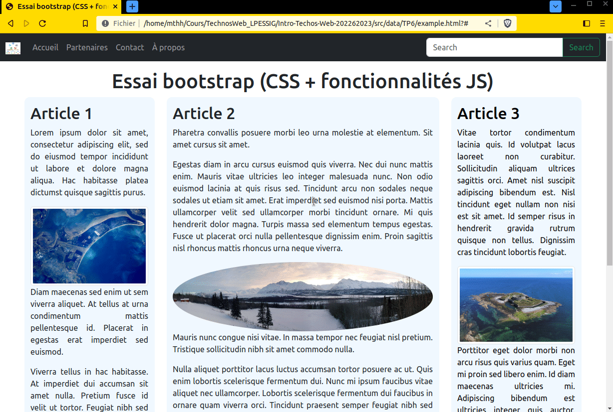
2. Créer un carrousel
Nous souhaitons ensuite implémenter un "carrousel". Il s'agit d'un composant rencontré très fréquemment sur web, permettant de faire défiler (automatiquement et/ou au clic de l'utilisateur) des images.
Votre carrousel sera composé d'un espace image et de deux boutons sous cet espace permettant de changer l’image pour l'image précédente et pour l'image suivante.
Vous devrez mettre en place un tableau JavaScript contenant 5 images, et faire défiler ces 5 images au clic sur les boutons "précédent" et "suivant" (en pensant à revenir à la première image en fin de parcours de la collection).
Vous placerez ce carrousel en haut de la page HTML sur laquelle vous travaillez, sous le titre et avant les premiers articles. Vous utiliserez les images suivantes :
- https://pixnio.com/free-images/2017/08/06/2017-08-06-08-58-39-1000x526.jpg
- https://pixnio.com/free-images/2017/08/04/2017-08-04-13-34-03-1000x667.jpg
- https://pixnio.com/free-images/2017/08/04/2017-08-04-13-32-41-1000x690.jpg
- https://pixnio.com/free-images/2017/08/04/2017-08-04-13-34-27-1000x667.jpg
- https://pixnio.com/free-images/2017/08/04/2017-08-04-13-34-55-850x850.jpg
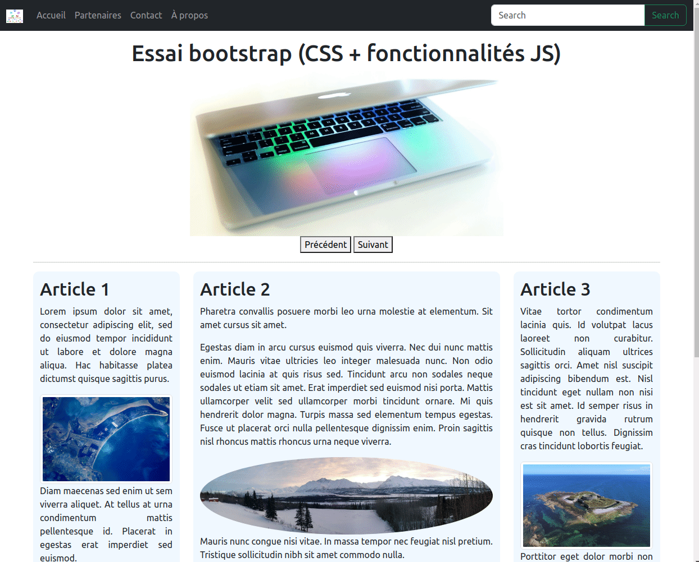
3. Pour aller plus loin... l'ajout d'une carte interactive
Nous souhaitons désormais ajouter une carte interactive créée avec la bibliothèque leaflet et y ajouter des épingles permettant de localiser nos lieux préférés.
3.1 Leaflet
Il s'agit d'une bibliothèque permettant de créer des cartes interactives. La bibliothèque est mobile-friendly par défaut et dispose de l'ensemble des fonctionnalités requise pour créer des cartes interactives personnalisées et avec vos propres données.
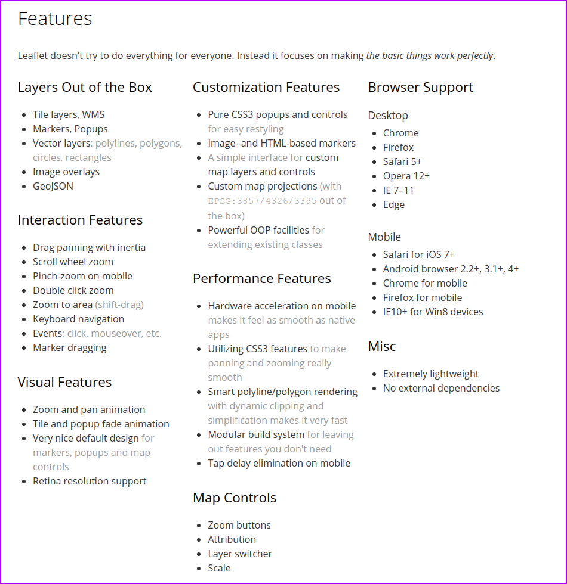
3.2 Ajout d'une carte et de plusieurs épingles.
Suivez le tutoriel présent sur le site de leaflet (jusqu'à la partie "Working with popups" inclus) afin d'ajouter une carte à votre page (cette carte devra être centrée sur le campus de Saint-Martin-d'Hères) puis d'ajouter 3 épingles (marker dans le tutoriel) où vous le souhaitez, chacune de ces épingle devra être permettre d'ouvrir une popup lorsqu'elle sera cliquée.
Vous constaterez que pour l'utiliser il est nécessaire d'inclure deux fichiers dans votre document HTML :
- Un fichier CSS (extension
.css) contenant des règles de styles - Un fichier JavaScript (extension
.js) contenant le code source de la bibliothèque
3.3 Choix d'un autre fond de carte
Renseignez vous (documentation, autres ressources sur le Web, ...) sur la manière de permettre à l'utilisateur de changer son fond de carte, comme sur l'exemple qui suit. Essayez d'implémenter cette fonctionnalité.

Programmation Web coté serveur en Python
1. Préambule
1.1 Langages coté client et langages coté serveur ...
HTML (HyperText Markup Language) et CSS (Cascading Style Sheet), sont deux langages de simple affichage statique de contenus (statique car rien ne change, le contenu est toujours le même).
Les langages de script permettent de produire des pages web non statiques, dynamiques, c’est-à-dire dont le contenu peut varier en fonction de différentes conditions (et notamment des actions de l'utilisateur).
Il existe des langages côté client (le principal actuellement est Javascript) et des langages côté serveur.
PHP est un célèbre exemple de langage de programmation qui s’exécute côté serveur. Ce langage permet de produire du code, visualisable par le client, qui peut différer en fonction de circonstances définies, ce qui introduit donc un certain dynamisme. Ce dynamisme peut être accru grâce à une connexion avec une base de données (PostGreSQL, MySQL, SQLite, etc.).

Source: Marlène Villanova
La figure ci-dessus (également présentée dans les slides du 1er cours) présente l’architecture couplant un langage de programmation et une base de données afin de générer, sur le serveur, du contenu dynamique lors d'une requête en provenance d'un client (navigateur Web) : c'est ce que nous allons implémenter dans les 2 prochains TP.
Nous n'utiliserons pas le langage PHP mais le langage Python avec le micro-framework Flask.
Il existe de nombreux frameworks de programmation de serveur Web dans un multitude de langages, par exemple :
- en PHP :
laravel,Symphony, - en Python :
Django,Flask,cherry.py - en JavaScript avec node.js :
Express.js, - en Java :
Spring, ... - en Ruby :
Ruby on Rails, ...
Les logiciels Apache HTTP server et NGINX sont également des serveurs HTTP.
Au même titre, il existe différents clients, que vous utilisez ou connaissez déjà pour certains puisqu'il s'agit notamment des navigateurs Web :
Chrome,Firefox,Microsoft Edge, etc.- En ligne de commande :
cURL,Wget - Des bibliothèques proposent d'effectuer des requêtes HTTP dans la plupart des langages de programmation (
requestsethttpxen Python par exemple)
1.2 Le protocole HTTP
Dans le 1er cours, nous avons évoqué le protocole HTTP (pour Hypertext Transfer Protocol, littéralement "protocole de transfert hypertexte"). Il s'agit d'un protocole de communication client-serveur (se situant au niveau "application" du modèle en couches présenté à cette occasion et dont l'illustration est rappelée ci-dessous).

{kind=link}

Source: Mozilla Developpers Network
{kind=link}
Le protocole HTTP définie plusieurs méthodes. Une méthode est une commande spécifiant au serveur un type de requête, lui demandant d'effectuer une action particulière sur la ressource désignée par l'URL qui accompagne cette méthode.
Les méthodes qui seront utilisées dans cette série de TP sont les suivantes (il s'agit également des plus utilisées):
GET: méthode pour demander une ressource (une requêteGETest sans effet sur la ressource, on peut la répéter et obtenir le même résultat), c'est la méthode utilisée lors de la récupération d'une page Web par exemple.POST: méthode pour transmettre des données en vue de leur traitement (par exemple depuis un formulaire HTML)
→ Concrêtement, lorsqu'une page HTML est consultée, la première étape consiste à la récupérer : une requête HTTP de type GET sur l'url de la page est effectuée.
→ De même, lorsque vous validez un formulaire, une requête HTTP de type POST est effectuée sur une url du serveur permettant de valider et de traiter le formulaire.
Ces autres méthodes sont parfois utilisées (notamment lors de l'utilisation d'une API de type REST pour les 3 dernières), gardez leur nom en tête pour savoir qu'il s'agit de méthodes HTTP si vous les rencontrez :
HEAD: méthode pour demander des informations sur la ressource, sans récupérer la ressource.PUT: méthode pour remplacer ou ajouter une ressource.DELETE: méthode pour supprimer une ressource.PATCH: méthode pour faire une modification partielle (contrairement àPUTqui la remplacerait) d'une ressource.
1.3 Le fil rouge de ce TP et des suivants ...
Nous souhaitons construire une plate-forme collaborative permettant de noter et de donner un avis sur les bâtiments du campus. Cette tâche complexe peut-être décomposée en plusieurs sous-tâches:
- créer une base de données permettant de stocker cette information
- donner à l'utilisateur la possibilité de consulter l'information (localisation des bâtiments notés et détails des notes/avis)
- donner à l'utilisateur la possibilité de saisir une nouvelle information (ajout d'une note/avis à une localisation en ayant déjà où non)
Aujourd'hui (TP7), nous verrons comment organiser le code coté serveur pour que différentes actions puissent être effectuées en fonction du type de requête ou du chemin de la requête (i.e. comment passer d'un contenu statique à un contenu dynamique) et nous verrons comment utiliser des templates HTML.
Le TP8 servira à créer un formulaire dans la page HTML et à le traiter coté serveur pour ajouter son contenu dans une base de données SQLite. Les informations présentes dans la base de données seront mobilisées pour être affichées coté client ; elles pourront également être mises à jour. Nous ajouterons ensuite une carte interactive dans la page HTML. C'est cette carte qui sera utilisée comme interface pour l'ajout d'avis (lors du clic de l'utilisateur par exemple) ainsi que pour l'affichage de la localisation des avis présents dans la base de données (sous forme de markers). Cette carte fera appel à du code Javascript, exécuté directement dans le navigateur web du client. L'application construite pourra être déployée individuellement sur la plate-forme PythonAnywhere.
2. La bibliothèque Flask
Il s'agit d'un micro-framework conçu pour développer une application Web coté serveur. À ce titre il va fournir des outils génériques pour créer ce type d'application tout en favorisant la mise en oeuvre de bonnes pratiques et en limitant l'écriture de code inutile. Le qualificatif micro décrit ici plusieurs réalités :
- vise à garder le code de base simple mais extensible,
- n'est pas opiniâtre dans le choix d'une base de données,
- au final,
Flasks'occupe de l'essentiel (gérer les routes et les requêtes HTTP et permettre l'utilisation de templates) mais les autres tâches "optionnelles" (connexion à une DB, authentification, formulaires, etc.) sont laissées à des extensions.
Flask repose notamment sur deux bibliothèques dont il est utile d'avoir connaissance : Werkzeug (une boite à outils WSGI) et Jinja2 (un moteur de template).

Liens utiles:
- Documentation officielle de
Flask: https://flask.palletsprojects.com/en/1.1.x/ - Documentation officielle de
Jinja2: https://jinja.palletsprojects.com/en/2.11.x/ - Documentation officielle de
Werkzeug: https://werkzeug.palletsprojects.com/en/0.16.x/ - Liste de plugins et de ressources pour
Flask: https://github.com/humiaozuzu/awesome-flask
2.1 Premier pas avec Flask - Application et routes
Application
Code :
from flask import Flask
app = Flask(__name__)
@app.route("/route1")
def root():
return "Hello from Flask!"
Pour tester : http://mthh.pythonanywhere.com/route1
Explications :
appdésigne une application Flask;- la fonction
rootest appelée une vue. Elle retourne une chaîne de caractères, qui sera le contenu de la réponse. Par défaut, le statut de la réponse est 200, et le type de contenu est HTML, encodé en UTF-8; - la ligne qui précède la fonction
rootest un décorateur, il sert ici à spécifier l’URL pour laquelle cette vue doit être utilisée (sa route). Ce décorateur est une méthode de l'objetapp, l'application Flask, créée au-dessus, dans laquelle s'inscrit cette route.
Routes
En développement Web, on appelle route une URL ou un ensemble d’URLs conduisant à l’exécution d’une fonction donnée.
Dans Flask, les routes sont déclarées via le décorateur @app.route, comme dans l’exemple ci-dessus.
Une route peut être paramétrée, auquel cas le paramêtre sera passé à la fonction vue :
@app.route("/hello/<name>")
def hello(name):
return "Hello {}".format(name)
Pour tester : http://mthh.pythonanywhere.com/hello/John
Les exemples ci-dessus vous permettent de personnaliser la réponse en fonction de la demande de l'utilisateur ou de faire effectuer des calculs coté serveur en bénéficiant de la puissance et de l'étendue des fonctionnalités offertes par python et son écosystème.
- Il est également possible de spécifier plusieurs paramètres lors de la définition d'une route en utilisant la forme
/hello/<a>/<b>:
@app.route("/add/<a>/<b>")
def add(a, b):
return "Result: {}".format(int(a) + int(b))
Pour tester : http://mthh.pythonanywhere.com/add/3/12
- Il est possible de spécifier le type attendu pour les paramètres de la route ; s'ils ne sont pas satisfaits, une réponse de type
404 - NOT FOUNDsera renvoyé par défaut :
@app.route("/add/<int:a>/<int:b>")
def add(a, b):
return "Result: {}".format(a + b)
Pour tester : http://mthh.pythonanywhere.com/add/12/abc
Un réponse 404 - NOT FOUND sera également renvoyée si vous essayer d'accéder à une route qui n'est pas définie (ici abdef) :
Pour tester : http://mthh.pythonanywhere.com/abdef
- Par commoditée il est également possible de spécifier plusieurs routes conduisant à l'exécution d'une fonction :
@app.route("/greetings")
@app.route("/greetings/<name>")
def greetings(name=None):
return "Hello {} !".format(name or 'world')
Pour tester : http://mthh.pythonanywhere.com/greetings
Pour tester : http://mthh.pythonanywhere.com/greetings/Paul
Méthodes HTTP
Lors de la création d'une route, il est possible de spécifier la ou les méthodes par laquelle elle est accessible. Dans les exemples précédents, comme aucune méthode n'était spécifiée explicitement, il s'agissait de la méthode GET. Ainsi notre première fonction aurait pu être écrite de la manière qui suit :
@app.route("/", methods=['GET'])
def root():
return "Hello from Flask!"
Une route qui accepte seulement une méthode POST sera donc déclarée de la manière suivante :
@app.route('/valid-form', methods=['POST'])
Il pourra parfois être nécessaire de créer des routes qui acceptent les deux méthodes. Prenons l'exemple du code ci-dessous. La route /update est créée pour accepter les méthodes GET et POST :
from flask import request, render_template
@app.route('/update', methods=['GET', 'POST'])
def example():
if request.method == 'GET':
return render_template('update.html')
elif request.method == 'POST':
# traitement des données envoyées ...
return 'Entry updated' !
- S'il s'agit d'une requête de type GET, la page qui correspond au template
update.htmlsera retournée au client (on s'imagine qu'elle contient notamment un formulaire permettant de mettre à jour une entrée dans la BD). - S'il s'agit d'une requête de type POST, les données envoyées sont traitées pour mettre à jour l'entrée (cette action correspond à la validation et à l'envoi, par le client, du formulaire contenu dans la page auquel il a accedé précédement par la route
/update) :
2.2 Templates
Flask dispose d'un mécanisme qui permet d'utiliser un modèle (template) de document dont certaines parties seront remplacées dynamiquement à l'exécution, avant d'être envoyé au client.
Les exemples présentés jusqu'ici ne renvoient que des chaînes de caractères. Comme indiqué plus haut, il s'agit en réalité de contenu HTML ; vous pouvez ainsi écrire des routes renvoyant du contenu HTML correctement formatté et généré de manière dynamique:
from datetime import date
@app.route("/pretty-add/<int:a>/<int:b>")
def pretty_add(a, b):
current_date = date.today().isoformat()
result = a + b
return """
<!DOCTYPE html>
<html>
<head>
<meta charset="utf-8" />
<title>Addition result page</title>
</head>
<body style="text-align:center;">
<h1>Result page</h1>
<p>{} + {} = <strong>{}</strong></p>
<hr/>
<p><em>Computed on {}</em></p>
</body>
</html>""".format(a, b, result, current_date)
Pour tester : http://mthh.pythonanywhere.com/pretty-add/12/20
Si cette méthode est utilisable, elle va toutefois vite rendre votre code difficilement compréhensible et elle ne facilite pas la réutilisation de morceau de code qui pourraient l'être.
C'est ici que l'intérêt du moteur de templates rentre en jeu. Ce dernier va permettre de stocker dans des fichiers séparés le modèle de nos pages HTML. Lors de l'exécution (avec la fonction render_template présentée ensuite), le modèle va être complété avec les paramètres fournis pour produire un document HTML utilisable par le client.
Syntaxe utilisée par Jinja2
Reprenons l'exemple de notre route pretty-add définit ci-dessus ; il est possible de définir (dans un fichier template/pretty-add.html par exemple) le template suivant:
<!DOCTYPE html>
<html>
<head>
<meta charset="utf-8" />
<title>Addition result page</title>
</head>
<body style="text-align:center;">
<h1>Result page</h1>
<p>{{ a }} + {{ b }} = <strong>{{ result }}</strong></p>
<hr/>
<p><em>Computed on {{ current_date }}</em></p>
</body>
</html>
... et de réécrire la fonction de la manière suivante :
from Flask import render_template
@app.route("/pretty-add/<int:a>/<int:b>")
def pretty_add(a, b):
date_now = date.today().isoformat()
result = a + b
return render_template('pretty-add.html',
a=a,
b=b,
result=result,
current_date=date_now)
Dans cet exemple nous avons utilisé:
- des expressions, délimitées par les symboles
{{ ... }}; elles peuvent contenir des expressions Python et ici, lorsqu'on écrit{{ result }}on cherche donc à utiliser le contenu de la variableresultpour l'afficher dans la page HTML qui sera renvoyée.
D'autres constructions peuvent être utilisées:
- des déclarations (statements), délimités avec les symboles
{% ... %}(conditions, boucles, etc.), - des commentaires, délimités avec les symboles
{# ... #}.
Remarque: La fonction
render_templateaccepte les variables attendues par le template (son premier argument) en tant qu'arguments optionnels nommés : on utilise le nom de la variable attendue dans le template comme clé et le nom de la variable dans le code actuel comme valeur (current_date=date_nowdans l'exemple précédent).
Exemple avec une boucle
Il va ainsi être possible d'utiliser, dans les templates des déclarations Python complexes ainsi que différents éléments utilisés habituellement pour le contrôle du flux d'exécution du programme. Regardez le code de ce template :
<!DOCTYPE html>
<html lang="en">
<head>
<title>My Webpage</title>
</head>
<body>
<ul id="navigation">
{% for item in navigation %}
<li><a href="{{ item['href'] }}">{{ item['caption'] }}</a></li>
{% endfor %}
</ul>
<h1>My Webpage</h1>
<p>Hello {{ name }}</p>
{#
A multi
-line
comment
#}
</body>
</html>
Explications :
- La variable
navigationest ici unelistdedict, de la forme
il est possible d'utiliser la déclarationnavigation = [ {"href": "index.html", "caption": "Accueil"}, {"href": "partenaires.html", "caption": "Partenaires"} ]{% for item in navigation %}qui a le même effet qu'une boucle utilisantforen Python - la syntaxe utilisée ici nécessite toutefois de fermer le bloc correspondant à cette boucle avec la déclaration{% endfor %}. - La variable
nameest de typestret on l'affiche telle-quelle. - La dernier bloc
{# ... #}correspond à un commentaire ; comme dans les autres langages, servez-vous en si nécessaire ! - Les variables attendues (ici
navigationetname) dans le template sont à donner en arguments optionnels et nommés de la fonctionrender_template.
Réutilisation de templates
Reprenons l'exemple des pages que nous avons créées dans les TP précédents : elles contenaient une barre de navigation et un footer qui avaient tous deux vocation à être les mêmes pour chacune des pages du site.
Grâce au mécanisme permettant d'inclure des templates, nous allons par exemple pouvoir définir dans des fichiers séparés les éléments réutilisables de notre site, pour les inclure depuis le template contenant le contenu principal de la page :
{% include 'header.html' %}
Contenu principal de la page ici...
{% include 'footer.html' %}
Les templates appelés de cette manière ont accès aux mêmes variables que le template qui les a inclus.
3 - Mise en pratique üöÄ Exercice 1 üöÄ Inscription √† PythonAnywhere et d√©marrage d'un projet Flask
3.1 Inscription à PythonAnywhere
L'inscription se passe à l'URL suivante : https://www.pythonanywhere.com/registration/register/beginner/.
Cette plateforme va vous permettre d'éxecuter du code Python sur un serveur distant. Cette solution peut être utile si vous voulez vous libérer des contraintes liées à la plateforme sur laquelle vous travaillez (système d'exploitation, droits administrateurs, etc.).
Dans notre cas, elle va être utile car elle permet d'héberger une application Web (créee avec Flask mais aussi avec Web2py ou Django) et d'y accéder à une URL de la forme http://{pseudonyme}.pythonanywhere.com.
Suivez les indications suivantes pour y créer une application Flask vide.
- Après vous être enregistré et loggé sur la plateforme, cliquez sur le bouton "Web" :
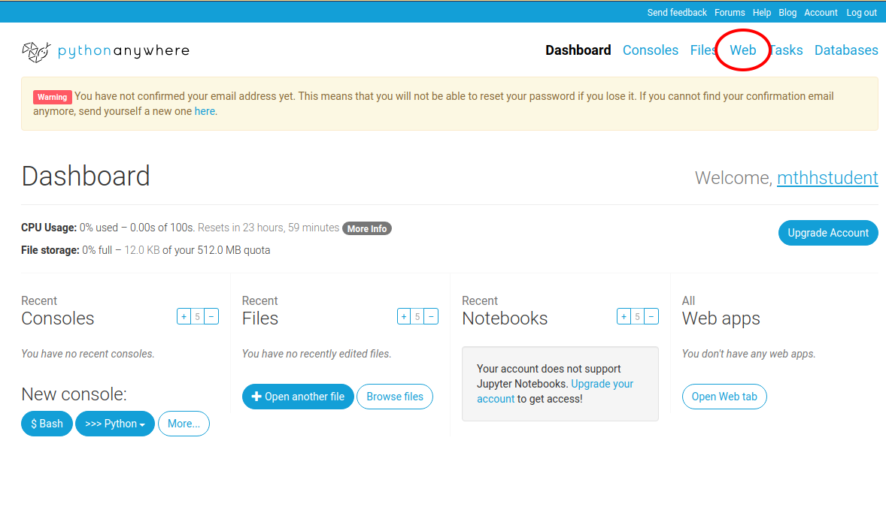
- Cliquez sur le bouton "Add a new web app" :
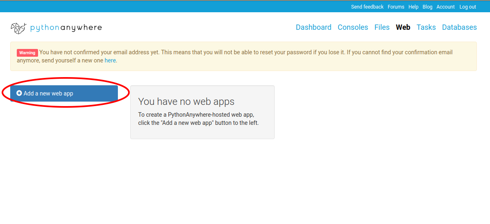
- Une fenetre s'ouvre, cliquez sur "next" :
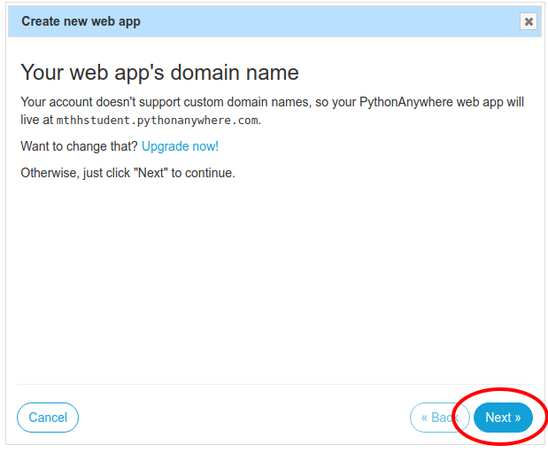
- Choisissez d'utiliser le framework Flask :

- Sélectionnez la version de Python avec laquelle vous avez l'habitude de travailler :
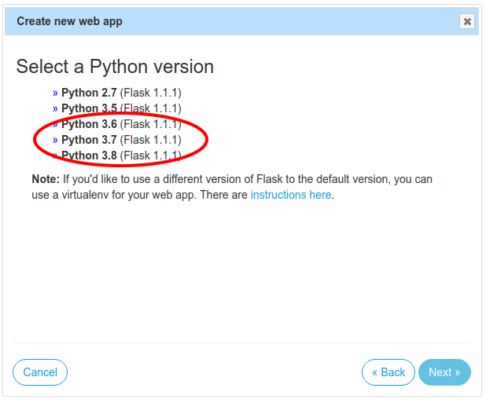
- Ne modifiez pas le chemin du fichier
flask_app.pyet cliquez sur "next" :
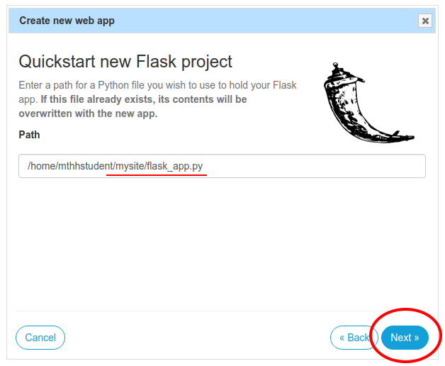
- L'application est créée et accessible à l'URL
https://{pseudonyme}.pythonanywhere.com. Cliquez sur le bouton "Files" pour éditer le code de votre serveur :
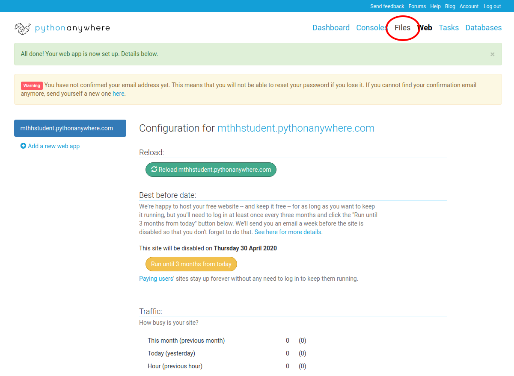
- Naviguez dans l'arborescence jusqu'à trouver ce fichier. Cliquez pour l'ouvrir :
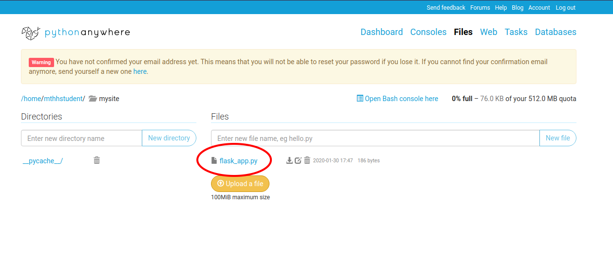
- Vous pouvez l'éditer (et le sauvegarder en faisant ctrl + s par exemple).
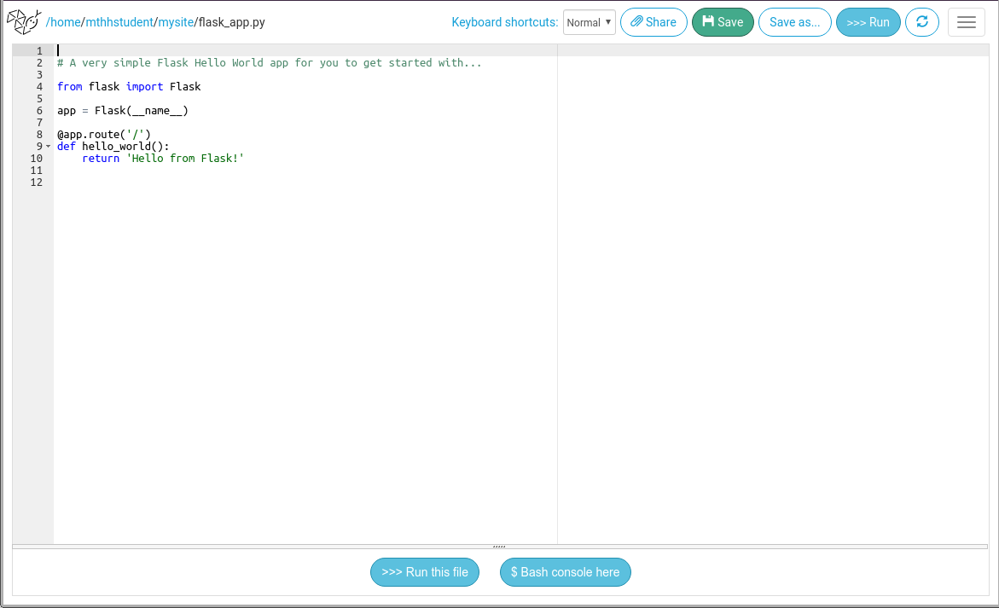
- Après l'avoir édité, vous devez recharger votre web app. Cela peut se faire directement depuis la page de l'éditeur de code (image ci-dessous) ou depuis la section Web de votre espace PythonAnywhere.
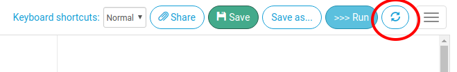
üöÄ Rechargez votre application et v√©rifiez que tout fonctionne correctement, l'URL √† utiliser est https://{pseudonyme}.pythonanywhere.com.
Remarque: Vous pouvez consulter les logs d'erreur de l'application à l'adresse https://www.pythonanywhere.com/user/{pseudonyme}/files/var/log/{pseudonyme}.pythonanywhere.com.error.log
3.2 Premiers pas avec Flask et structure du projet
Dans le dossier mysite vous disposez dorénavant d'un fichier flask_app.py.
Il est également nécessaire de créer un dossier que vous nommerez templates. Dans le dossier templates vous décompresserez les données du jour : données TP7 - il s'agit de 2 fichiers de templates utilisant Jinja2.
Vous devez donc avoir la structure de projet suivante:
mysite
├── templates <--- Le dossier contenant nos modèles de documents HTML
│ ├── index.html
│ └── header.html
└── flask_app.py <--- Le code de l'appli Web à réaliser
4. Mise en pratique üöÄ Exercice 2 üöÄ Modification de l'application
- Ajoutez le morceau de code suivant dans le fichier
flask_app.py, il s'agit des premiers avis fictifs à utiliser avant que nous ne constituions la base de données dans le TP suivant:
entries = [
{"id_review": 1, "id_batiment": 26, "rate": 5, "comment": "Mattis molestie a iaculis at erat pellentesque adipiscing commodo."},
{"id_review": 2, "id_batiment": 18, "rate": 4, "comment": "Amet massa vitae tortor condimentum lacinia."},
{"id_review": 3, "id_batiment": 31, "rate": 3, "comment": "Imperdiet sed euismod nisi porta lorem mollis aliquam."},
{"id_review": 4, "id_batiment": 22, "rate": 1, "comment": "Dignissim enim sit amet venenatis. Urna cursus eget nunc scelerisque."},
{"id_review": 5, "id_batiment": 26, "rate": 4, "comment": "A pellentesque sit amet porttitor eget dolor morbi."},
{"id_review": 6, "id_batiment": 18, "rate": 3, "comment": "Consequat nisl vel pretium lectus quam id leo in vitae."},
]
-
En vous aidant des exemples montrés au début de cette séance de TP, vous devez modifier la route existante afin que la route
/et la route/indexappellent toutes deux la fonctionroot. Cette fonction devra utiliser le templateindex.html. Vous devrez également ouvrir ce fichier de template pour voir les variables qui sont attendues et que vous devrez donner en argument à la fonctionrender_template. -
Vous devez créer une nouvelle route du nom de
/reviewdoit accepter un argument de typeint, l'identifiant de l'avis que l'utilisateur souhaite obtenir. Vous devez également écrire la fonction correspondante : pour un identifiant donné, elle doit renvoyer la note et l'avis sous forme d'un bloc de texte formatté de manière simple (par exemple: "Note X - Commentaire : xxxxx"). Si aucun avis ne correspond à l'identifiant, elle retourne une chaîne de caractères vide. -
Dans votre navigateur, vérifiez les points suivants avant de passer à l'exercice qui suit:
- les routes
/et/indexfonctionnent et renvoient le même contenu (cf. image). - la route
/reviewretourne une erreur404 - NOT FOUNDalors que la route/review/2retourne bien le contenu de l'avis correspondant.
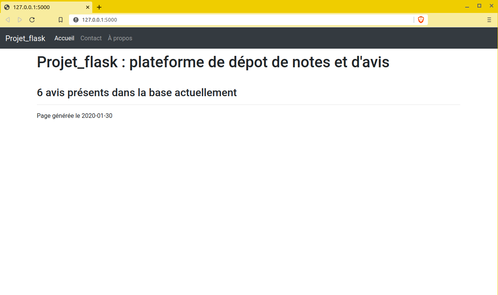 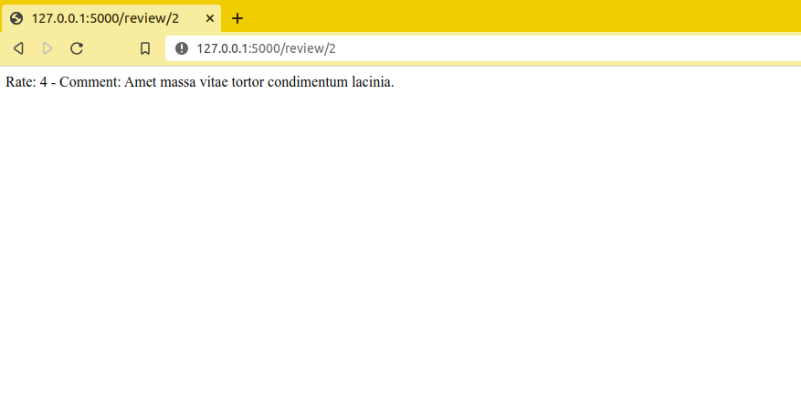
5. Mise en pratique üöÄ Exercice 3 üöÄ Utilisation des templates
- En plus d'afficher le nombre d'avis présents dans la base, nous souhaitons afficher la totalité de la liste des avis sur la page d'accueil. Vous devez modifier le template
index.htmlpour créer dynamiquement une liste HTML où chaque item correspondra à un avis de lalistPython appelléeentries. Un exemple similaire a été donné ici.
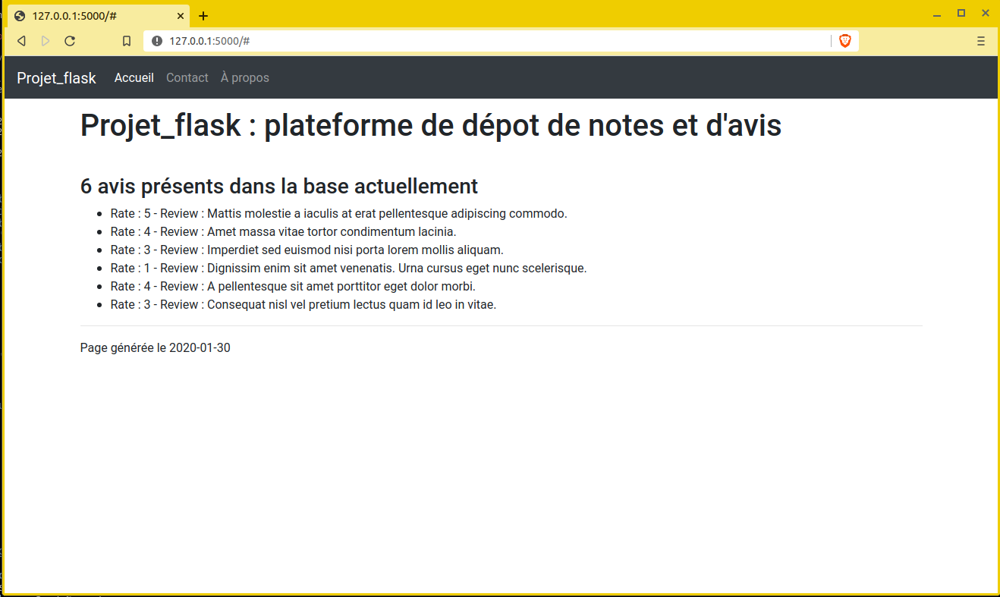
Interactions serveur/client, formulaires et BD
1. Préambule
Les objectifs de ce TP sont:
- de connecter l'application
Flaskà une base de données SQLite. - de créer un formulaire permettant d'ajouter une nouvelle entrée à cette base de données.
- d'utiliser une carte interactive leaflet pour sélectionner la localisation de l'avis.
Pour mobiliser les données de cette BD, nous n'aurons pas à saisir de requêtes SQL ; en effet nous allons utiliser un ORM (un Object Relational Mapping / un Mapping objet-relationnel) du nom de SQLAlchemy.
Il n'y a pas de code √† saisir avant la fin cette partie o√π vous rencontrerez √† nouveau le symbole 'üöÄ'.
Liens utiles à propos de Flask et Jinja2:
- Documentation officielle de
Flask: https://flask.palletsprojects.com/en/1.1.x/ - Documentation officielle de
Jinja2: https://jinja.palletsprojects.com/en/2.11.x/ - Liste de plugins et de ressources pour
Flask: https://github.com/humiaozuzu/awesome-flask
Liens utiles sur le JavaScript:
- Mozilla Developpers Network - Premier pas en JavaScript : https://developer.mozilla.org/fr/docs/Learn/JavaScript/First_steps
- W3schools Javascript Tutorial : https://www.w3schools.com/js/
- Eloquent JavaScript - 3rd edition (online, PDF, E-PUB, etc.) : https://eloquentjavascript.net/
- Pour se faire la main en JavaScript il faut pratiquer... des exercices comme ceux de W3schools puis des sites comme JavaScript30 peuvent donner de bonnes occasions de pratiquer !
Liens utiles sur les fonctionnalités utilisées aujourd'hui:
- Élément HTML
<input>et ses attributs : https://developer.mozilla.org/fr/docs/Web/HTML/Element/input- Élément HTML
<a>et ses attributs : https://developer.mozilla.org/fr/docs/Web/HTML/Element/a- Élément HTML
<fieldset>: https://developer.mozilla.org/fr/docs/Web/HTML/Element/Fieldset- Documentation officielle de
Leaflet: https://leafletjs.com/reference-1.7.1.html- Liste de plugins et de ressources pour
Leaflet: https://leafletjs.com/plugins.html
Installation et création de la base de données
En utilisant PythonAnywhere cette bibliothèque est déjà installée, vous n'avez rien de particulier à faire.
Sinon il est possible d'installer SQLAlchemy et l'extension flask_sqlalchemy que nous allons utiliser avec Flask comme les autres packages Python.
Localisation de la base de données
Il est nécessaire d'indiquer à l'ORM où se situe la BD à laquelle se connecter, en l’occurrence, dans le même dossier que le code de l'application, avec le nom app.db:
from flask import Flask
from flask_sqlalchemy import SQLAlchemy
# On stocke le chemin absolu du dossier qui contient le fichier
# qui s'éxecute :
basedir = os.path.abspath(os.path.dirname(__file__))
app = Flask(__name__)
# app.config est un dictionnaire :
app.config['SQLALCHEMY_DATABASE_URI'] = 'sqlite:///' + os.path.join(basedir, 'app.db')
db = SQLAlchemy(app)
Créer un modèle correspondant au type d'entrées que nous souhaitons
Nous souhaitons stocker nos notes et avis dans une table Review.
Celle-ci va avoir 6 colonnes :
id_review(l'identifiant unique de l'avis),rate(une note, de 1 à 5, où 5 représente la plus forte note),comment(un champ de texte libre, limité à 255 caractères mais qui peut être laissé vide),name(un champ de texte où l'utilisateur inscrira son nom),latitude(un champ de nombres à virgule),longitude(un champ de nombre à virgule),
class Review(db.Model):
id_review = db.Column(db.Integer(), primary_key=True)
rate = db.Column(db.Integer(), nullable=False)
comment = db.Column(db.String(255))
name=db.Column(db.String(), nullable=False)
latitude=db.Column(db.Float(), nullable=False)
longitude=db.Column(db.Float(), nullable=False)
Ce code va permettre de modifier la base de données sans écrire de requêtes SQL mais en manipulant des objets Python.
Notez que nous avons spécifié le type attendu (db.Integer, db.String, ..) pour chaque colonne (db.Column) de la table (ici Review) que vous allons manipuler à travers ce modèle.
L'utilisation du modèle Review revient donc maintenant à mobiliser la table suivante:
| id_review | name | comment | rate | latitude | longitude |
|---|---|---|---|---|---|
| 1 | Cameran Duran | Mattis molestie a iaculis at erat pellentesque adipiscing commodo. | 5 | 45.1913376954 | 5.7700002193 |
| 2 | Nasim Erickson | Amet massa vitae tortor condimentum lacinia. | 4 | 45.1915115994 | 5.7732725143 |
| 3 | Guy Richardson | Imperdiet sed euismod nisi porta lorem mollis aliquam. | 3 | 45.1922903805 | 5.7727360725 |
| 4 | Veda Lott | Dignissim enim sit amet venenatis. Urna cursus eget nunc scelerisque. | 1 | 45.1929812805 | 5.7674560725 |
| 5 | Flavia Klein | A pellentesque sit amet porttitor eget dolor morbi. | 4 | 45.1934789176 | 5.7725615994 |
Utiliser le modèle pour communiquer avec la BD dans un style orienté-objet (1)
On pourra par exemple créer une review et l'ajouter à la base de données avec le code suivant :
new_review = Review(
rate=5,
comment="Mattis molestie a iaculis at erat pellentesque adipiscing commodo.",
name="Ada",
latitude=45.1913376954,
longitude=5.7700002193,
)
db.session.add(new_review)
db.session.commit()
Il n'est pas nécessaire d'indiquer l'identifiant de la review à créer : comme il s'agit d'une clé primaire, elle sera renseignée automatiquement lors de l'appel de la méthode db.session.commit() en fonction des entrées déjà présentes dans la table.
Utiliser le modèle pour communiquer avec la BD dans un style orienté-objet (2)
C'est également avec ce modèle Review qu'on pourra faire des requêtes sur la table correspondante :
# Renvoie toute les entrées de la table `Review` dans une `list` python
all_review = Review.query.all()
# Effectue une requete sur la table `Review`
# en utilisant la clé primaire (ici id_review):
review2 = Review.query.get(2)
Il est ensuite possible d'accéder aux valeurs qui correspondent à chacun des champs de la table Review pour une entrée donnée, en utilisant la notation par point :
# Demande la review avec 2 comme `id_review`
review2 = Review.query.get(2)
# Accès au champ `rate` de la review
print(review2.rate) # --> 4
# Accès au champ `comment` de la review
print(review2.comment) # --> "Amet massa vitae tortor condimentum lacinia."
Putting it all together...
Ce code correspond à l'adaptation du code obtenu à la fin du TP précédent, en se connectant cette fois à une base de données avec SQLAlchemy comme présenté ci-dessus.
üöÄ Prenez-en connaissance attentivement et copiez-le dans le fichier flask_app.py dans votre espace PythonAnywhere.
üöÄ R√©cup√©rez le fichier app.db, il s'agit de votre base de donn√©es SQLite. Copiez le dans votre espace PythonAnywhere dans le m√™me dossier que le fichier flask_app.py.
from flask import Flask, render_template, request, url_for, redirect
from flask_sqlalchemy import SQLAlchemy
from datetime import date
import os
basedir = os.path.abspath(os.path.dirname(__file__))
app = Flask(__name__)
app.config['SQLALCHEMY_DATABASE_URI'] = 'sqlite:///' + os.path.join(basedir, 'app.db')
db = SQLAlchemy(app)
class Review(db.Model):
id_review = db.Column(db.Integer(), primary_key=True)
rate = db.Column(db.Integer(), nullable=False)
comment = db.Column(db.String(255))
name=db.Column(db.String(), nullable=False)
latitude=db.Column(db.Float(), nullable=False)
longitude=db.Column(db.Float(), nullable=False)
@app.route("/", methods=['GET', 'POST'])
@app.route('/index', methods=['GET', 'POST'])
def root():
if request.method == 'GET':
all_reviews = Review.query.all()
return render_template('index.html',
list_reviews=all_reviews,
nb_reviews = len(all_reviews),
current_date=date.today().isoformat())
elif request.method == 'POST':
new_review = Review(
rate=request.form['rate'],
comment=request.form['comment'],
name=request.form['name'],
latitude=request.form['latitude'],
longitude=request.form['longitude'],
)
db.session.add(new_review)
db.session.commit()
return redirect(url_for('root'))
@app.route('/review/<int:ident>')
def review(ident):
the_review = Review.query.get(ident)
if the_review:
return 'Rate: {} - Comment: {}'.format(the_review.rate, the_review.comment)
else:
return ''
2. Création d'un formulaire HTML à traiter côté serveur
Notre page d'accueil ne va plus se contenter de lister les avis déjà présents ; il va désormais être possible d'en ajouter de nouveaux grâce à un formulaire HTML.
Ce formulaire HTML sera remplit par le client, dans son navigateur Web puis envoyé (méthode HTTP POST) au serveur qui l'ajoutera à la base de données.
<!-- le début
de votre fichier ici
-->
<div class="row"> <!-- On utilise les lignes/colonnes Bootstrap ... -->
<div class="col-md-4 mx-auto"> <!-- .. pour obtenir rapidement une disposition agréable -->
<h3>Ajout d'un nouvel avis</h3>
<form action="{{ request.path }}" method="post">
<label for="rate">Rate: </label>
<output name="rateOutput" id="ageOutputId">5</output>
<!--
^^^ On utilise un élément 'output' ci-dessus pour afficher la valeur du slider ci-dessous
grace au code qui figure dans l'attribut 'oninput' : il s'agit de code JavaScript
qui reporte la valeur du slider sur l'element 'output' à chaque changement.
Ils sont tous les deux initialiser avec la meme valeur : 5.
-->
<input type="range" name="rate" id="rateInput" min="1" max="5" value="5" class="form-range" oninput="rateOutput.value = rateInput.value"/>
<label for="comment">Comment</label><br>
<!-- maxlenght="255" pour correspondre à la longueur du champ définit dans notre modèle `Review` : -->
<textarea name="comment" maxlength="255" placeholder="Laissez votre avis ici !" class="form-control"></textarea><br>
<label for="name">Name</label><br>
<input type="text" name="name" maxlength="255" class="form-control" placeholder="Saisir votre nom !" /><br>
<input type="number" id="inputLong" name="longitude" step="any" readonly />
<input type="number" id="inputLat" name="latitude" step="any" readonly />
<input type="submit" value="Envoyer" class="btn btn-primary" />
</form>
</div>
</div>
<!-- le reste de votre fichier ici, normalement :
<hr />
<p>Page générée le {{ current_date }}</p>
</div>
...etc.. -->
Explications :
- Ce formulaire, définit par l'élément HTML
<form> </form>va être envoyé au chemin définit dans l'attributaction(ici la route actuelle à laquelle la page a été appelée, en utilisant le mécanisme de template vu précédemment), avec la méthode HTTPpost. - Il contient un champ
<input>de typerange: c'est un slider numérique dont on peut définir les valeurs min et max attendues ; il va servir à renseigner la note, de 1 à 5, donnée par l'utilisateur. - Il contient un champ
<textarea>: c'est un zone de saisie de texte qui peut s'étendre sur plusieurs lignes. - Il contient un élément
<input>de typesubmit: cela créé un bouton qui a pour vocation à appeler l'action définit pour ce formulaire (cf. 1er point de cette liste). L'attributclassqu'il utilise lui permet d'utiliser un style de Bootstrap.
üöÄ Ajoutez le code de ce formulaire au fichier templates/index.html.
Lorsque l'utilisateur cliquera sur "Envoyer", le formulaire sera donc transmis au serveur avec la méthode POST.
Le code de notre application Flask, fourni quelques lignes plus haut, est déjà adapté pour gérer ce type de requête. Relisez le code de la fonction root accompagné des explications qui suivent.
Explications :
- Lorsqu'une requête HTTP de type GET à lieu sur cette route, l'application récupère l'ensemble des entrées de la table
Review(avecReview.query.all()) puis elle appelle le templateindex.htmlen utilisant les arguments appropriées et vus précédemment. - Lorsqu'une requête HTTP de type POST à lieu sur cette route, l'application:
- lit le formulaire (
request.form) en accédant à la valeur des champs avec la notation entre crochets (request.form['rate']etrequest.form['comment']) - créée un objet correspondant à une nouvelle entrée (
new_review = Review(rate=data['rate'], comment=data['comment'])) - ajoute cette entrée à la table
Reviewavecdb.session.add(new_review)etdb.session.commit() - renvoie la page actuelle (
redirect(url_for('root'))), cela a pour effet de rafraîchir la page dans le navigateur du client et de faire apparaître l'avis qu'il vient de laisser
- lit le formulaire (
3. üöÄ Ajout d'une carte interactive
Vous allez ajouter une carte interactive grâce à la bibliothèque leaflet. C'est cette carte qui permettra à l'utilisateur de choisir les coordonnées de l'avis à laisser.
Pour celà vous devez effectuer les étapes suivantes, dans le fichier templates/index.html :
-
inclure le fichier CSS de leaflet dans la section
<head>de votre document :<link rel="stylesheet" href="https://unpkg.com/leaflet@1.9.3/dist/leaflet.css" integrity="sha256-kLaT2GOSpHechhsozzB+flnD+zUyjE2LlfWPgU04xyI=" crossorigin=""/> -
incluer le fichier JS de leaflet après le fichier CSS, toujours dans la section
<head>du document :<script src="https://unpkg.com/leaflet@1.9.3/dist/leaflet.js" integrity="sha256-WBkoXOwTeyKclOHuWtc+i2uENFpDZ9YPdf5Hf+D7ewM=" crossorigin=""> </script> -
inclure le morceau de code suivant dans la
<div>ayant la classerow, au dessus du formulaire :<div class="col-lg-8"> <!-- Un élément 'div' que nous allons utiliser pour la carte interactive : --> <div id="mapid"></div> </div> -
inclure le morceau de code suivant entre de nouvelles balises
<script></script>, à la fin du document, après l'import du fichierbootstrap.min.js:var mymap = L.map('mapid').setView([45.192, 5.768], 14); var osmLayer = L.tileLayer('http://{s}.tile.osm.org/{z}/{x}/{y}.png', { attribution: '© OpenStreetMap contributors', maxZoom: 19 }); mymap.addLayer(osmLayer); // Ici on définit une fonction Javascript dont le contenu sera exécuté // lors d'un clic sur la carte... // Le 'e' correspond au nom de variable de l'argument de la fonction onMapClick // Lorsque la fonction s'exécute (après un clic sur la carte donc) // cette variable contient un objet de type // [mouseevent](https://leafletjs.com/reference-1.6.0.html#mouseevent) function onMapClick(e) { console.log("You clicked the map at " + e.latlng); console.log(e.latlng.lng); console.log(e.latlng.lat); } // On associe la fonction créée au dessus à l’événement "click" // de l'objet mymap (notre carte interactive leaflet) mymap.on('click', onMapClick);
4. üöÄ Permettre l'envoi des coordonn√©es dans le formulaire
Documentation utile:
Modifiez le code JavaScript présent dans votre fichier templates/index.html afin que les champs latitude et longitude du formulaire se remplissent
avec les coordonnées du point cliqué sur la carte par l'utilisateur.
5. üöÄ Afficher des markers et des info-bulles correspondant √† la localisation des avis
Documentation utile:
-
Regardez le morceau de code présent en bas de la page https://leafletjs.com/ : les 3 dernières lignes montrent la création d'un marker et de l'info-bulle qui lui est associée, avec la bibliothèque Leaflet.
-
Modifier le code du fichier
index.htmlafin de créer un marker pour chaque avis. Vous allez utiliser la même fonctionnalité deJinja2que celle qui nous permet de parcourir l'ensemble des avis (actuellement pour les afficher sous forme d'une liste HTML) afin de mobiliser le code vu dans le point précédent. -
Rechargez la web app et testez que tout fonctionne correctement avant de passer à la suite :
- Lorsque vous envoyez le formulaire, la page doit se recharger correctement et le nouvel avis doit apparaître sur la carte.
- Lorsque vous cliquez sur un marker, la note et le commentaire doivent s'afficher dans une info-bulle.
6. üöÄ Donner vie aux liens √Ä propos et Contact de la barre de navigation
Documentation utile:
-
Inspirez-vous de la page http://mthh.pythonanywhere.com/about pour ajouter une page de ce type à votre site Web. Cela nécessite de créer un nouveau template et une nouvelle route dans l'application Python
flask_app.py. -
L'utilisateur doit pouvoir se rendre sur cette page en cliquant sur
À propos. Il doit pouvoir revenir sur la page d'accueil en cliquant surAccueil. -
Le lien
Contactdoit également être modifié afin d'y associer une adresse email. -
Rechargez la web app et testez que tout fonctionne correctement avant de passer à la suite.
7. üöÄ Aller plus loin dans la prise en compte de l'utilisateur... (1)
Documentation utile:
-
Le formulaire pourrait être désactivé par défaut avant que l'utilisateur ne clique une première fois sur la carte... Quel attribut devez vous utilisez pour ça ? (n'hésitez pas à chercher sur le Web, à grouper tous vos champs dans un élément HTML
<fieldset>si nécessaire, etc. !) -
Une fois les champs désactivés...il est nécessaire de les activer lors du clic de l'utilisateur. L'idée générale est la suivante :
- ce comportement devra être défini dans la fonction
onMapClickdans le code Javascript, puisqu'elle est appelée lors d'un clic sur la carte - il vous faut récupérer l'élément HTML qui a été désactivé (avec
document.getElementById('...')) et changer la valeur de l'attribut approprié. (inspirez-vous du code JavaScript existant)
- ce comportement devra être défini dans la fonction
8. üöÄ Personnaliser le rendu...
-
Utiliser des règles CSS (cf. TP2 et TP3) pour personnaliser l'apparence de votre site Web selon vos goûts (type de police différent pour une partie du document, couleurs des différents éléments, etc.).
-
Quelques idées...
- "habiller" le formulaire autrement,
- changer/ajuster l'emplacement des éléments dans la page (veillez à conserver une disposition agréable des éléments, aussi bien sur un grand écran que sur un écran type smartphone),
- des polices utilisables gratuitement sont disponibles sur https://fonts.google.com/ (des instructions sont fournis sur la démarche à suivre pour inclure puis utiliser ces polices),
- pensez également à regarder la documentation de Bootstrap si besoin (couleur de la barre de navigation, etc.).
9. üöÄ Aller plus loin dans la prise en compte de l'utilisateur... (2)
Documentation utile:
Plusieurs éléments peuvent encore être améliorés dans la mise en forme et dans le comportement de votre site :
- Vos pages ont-elles toutes un titre ? Remédiez-y si ce n'est pas le cas !
- L'état de la barre de navigation : lorsque vous êtes sur la page
À propos, est-ce bien ce lien là qui est définit comme étant "actif" ? (vérifiez le comportement par rapport à la page http://mthh.pythonanywhere.com/about si nécessaire) - Que se passe-t-il lorsqu'un utilisateur est sur la version mobile de votre page et qu'il clique sur la carte ? Est-il possible de descendre automatiquement jusqu'au formulaire afin que l'utilisateur voit qu'il a été activé ? (plusieurs options sont possibles)
- Peut-on changer le type de marker utilisés par Leaflet afin de personnaliser la page ? Comment pourrait-on afficher un marker différent en fonction du la note ?
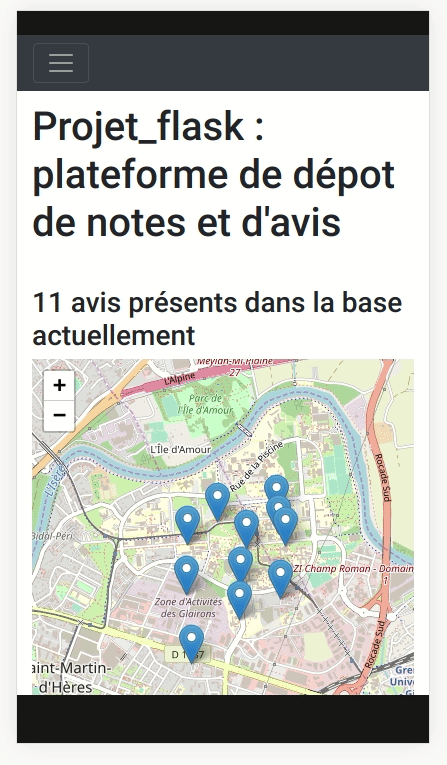
Essayez de résoudre ces problèmes : regardez les liens proposés ci-dessus et/ou utilisez un moteur de recherche pour décrire ce que vous souhaitez atteindre afin d'évaluer les options qui s'offrent à vous. Faites des propositions à l'oral si vous n'êtes pas sûr ou si vous voulez de l'aide pour l'implémentation.
Les "Technos Web"... quelques notions non abordées
1. Système de gestion de contenu (CMS)
Les systèmes de gestion de contenu (Content Management System - CMS) sont des solutions logicielles permettant de concevoir, gérer et mettre à jour des sites Web de manière "dynamique" (comme vu dans les TP précédents, on emploie ce terme pour désigner le fait que le contenu est généralement stocké dans une base de données et mobilisé server-side pour venir enrichir des modèles de pages).
Pour être qualifiées de CMS, ces solutions doivent présenter plusieurs caractéristiques :
- permettre l'édition simultanée d'un document par plusieurs éditeurs et offrir des fonctionnalités de hiérarchisation des utilisateurs avec des rôles (contributeur, administrateur, etc.)
- permettre la séparation de la gestion du contenu et de la forme
- fournir la chaîne de publication des documents / du contenu du site
- permettre la structuration du contenu (FAQ, blog, forum)
Ces CMS proposent ainsi généralement une interface Web permettant l'administration du site et permettant l'édition de pages web via l'utilisation d'outils WYSIWYG (What You See Is What You Get) ou via l'utilisation de balises simplifiées (BBCode, Markdown, etc.). La personnalisation du design (ou l'ajout de fonctionnalités plus avancées) relève parfois de l'utilisation de plugins.
Parmi les plus utilisés : Wordpress, Wix, Joomla, Shopify, Drupal.
Certains d'entre-eux sont spécialisés dans la réalisation de types de sites web précis : phpBB est un moteur de forum et MediaWiki est un moteur de Wiki.
Remarque: L'usage d'un CMS est loin d'être un élément négligeable de la publication sur le Web. En effet, à la date du 09/01/2023, Wordpress est utilisé par 43.1% des sites web, Shopify par 3.8% et Wix par 2.4%.
Toutefois 32.2% des sites web n'utilisent pas de CMS (c'est environ 1.5 points de moins qu'il y a un an).
Source: https://w3techs.com/technologies/overview/content_management
2. Langages de balisages légers
Il existe des langages de balisage dont la syntaxe est moins présente visuellement que le HTML. Les documents qui utilisent ces langages ont pour vocation de pouvoir être créés et modifiés avec un éditeur de texte simple et se doivent d'être facile à lire dans leur forme non formatée.
Ces langages de balisages léger ont été conçus pour être transformés vers des langages de balisage plus complexes (HTML ou LaTeX par exemple) et pour produire des documents (PDF par exemple).
- wikitext est utilisé pour les pages Wikipedia
- ReStructuredText est utilisé dans la documentation Python
- Markdown est utilisé pour la rédaction de différentes documentations (langage Rust, README des projets sur GitHub/GitLab, etc. - ce support de TP est également rédigé en Markdown puis converti en HTML et en PDF)
Éditeurs Markdown en ligne:
- https://dillinger.io/
- https://pandao.github.io/editor.md/en.html
- http://socrates.io/ (pas d'exemple présent à l'ouverture de la page !)
- https://hackmd.io/ (collaboratif)
3. Quelques tendances du développement web en 2022
Il s'agit de morceaux choisis, sur la base de mes lectures et donc forcément orienté par mes centres d'intérêt (certains des points évoqués peuvent être retrouvé sur des articles tels que https://dev.to/theme_selection/dominating-web-development-trends-2021-2ihp - mis à jour pour 2022).
Si vous êtes intéressés par le développement web vous risquez de rencontrer certains de ces termes lors de vos recherches.
Mobile first design
Le mobile first est un concept appartenant à la conception de sites web réactifs. Dans ce mode de pensée la construction d'une interface ergonomique pour terminaux mobiles est privilégiée, avant d'établir l'ergonomie pour un terminal de bureau. Nous en avons parlé dans les premières séances et c'est le principe utilisé par le framework Bootstrap.
Dark mode & low-light UX
Application d'un thème de couleur plus sombre, destiné notamment à éviter la lumière excessive produite par l'écran.
De nombreuses applications web proposent désormais un thème sombre :
- GitHub (depuis décembre 2020)
- StackOverlow (depuis mars 2020)
- YouTube (depuis 2017)
Un des autres avantages attribué à ce type de thèmes est une utilisation moindre de la batterie.
L'efficacité de ces thèmes sombres (notamment sur la productivité) semble toutefois sujette à débat.
SPA (Single Page Application)
Une application web monopage est une application web accessible depuis une page web unique (il n'y pas de chargement d'une nouvelle page lors d'une action de l'utilisateur, permettant de fluidifier son expérience). Voir illustration sur https://www.yoozly.com/blog/single-page-application par exemple.
Exemples :
PWA (Progressive Web Application)
Une application web progressive est une application web qui remplit un certain nombre de critères tels que : fonctionne hors-ligne, est installable, peut envoyer des notifications push, etc. Il s'agit d'un type d'application qui peut apparaître à l'utilisateur de la même manière que les applications natives ou les applications mobiles. Ce type d'application tire profit des fonctionnalités offertes les navigateurs modernes.
Exemples de PWA :
- Squoosh (cette application utilise également WebAssembly cité plus bas)
- diagrams.net
- De nombreuses titres de la presse : Le Monde, 20 minutes, etc.
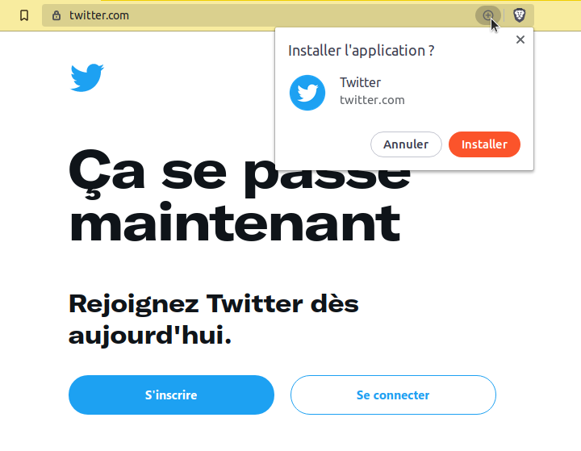
Voir par exemple https://developer.mozilla.org/fr/docs/Web/Progressive_web_apps/Introduction pour plus d'informations.
WebAssembly (wasm)
Il s'agit d'un standard du W3C pour le développement d'application.
"WebAssembly est un nouveau type de code qui peut être exécuté dans un navigateur web moderne. C'est un langage bas niveau, semblable à l'assembleur permettant d'atteindre des performances proches des applications natives (par exemple écrites en C/C++) tout en fonctionnant sur le Web. WebAssembly est conçu pour fonctionner en lien avec JavaScript." (source: https://developer.mozilla.org/fr/docs/WebAssembly)
Un des principaux buts du WebAssembly est donc de compléter le JavaScript pour permettre la création d'applications web performantes. Le code WebAssembly peut toutefois être exécuté hors d'un navigateur web.
Concrètement, il devient possible d'utiliser des langages compilés (tels que le C, C++, Rust ou Go) pour écrire des applications web. Ce code devra être compilé en utilisant le WebAssembly comme cible de compilation. Le code ainsi produit sera executable de la même manière sur toutes les plateformes à travers un navigateur web moderne.
Exemples de jeux ou d'applications fonctionnant dans le navigateur web grâce à WebAssembly :
Glossaire - Termes importants
-
API: Application Programming Interface ou interface de programmation d'application - Voir https://fr.wikipedia.org/wiki/Interface_de_programmation
-
Bootstrap: collection d'outils (CSS et Javascript) pour la création de sites web, développé par Twitter.
-
CLI: Command Line Interface - terme utilisé pour désigner un outil proposant une interface en ligne de commande, c'est à dire utilisable depuis une console du système par exemple.
-
CSS: Cascasding StyleSheet - c'est un langage permettant de décrire la présentation de documents HTML. Sa version actuelle est CSS3.
-
DOM: Document Object Model ou modèle d'objets de document - c'est une API pour les documents HTML qui définit la structure logique de ces documents ainsi que des méthodes pour les manipuler.
-
HTML: HyperText Markup Language - c'est un langage de balisage permettant de représenter les pages Web (il permet de les structurer sémantiquement et logiquement, d'inclure des formulaires et différents autres types de ressources : images, vidéos, liens vers d'autres pages ou ressources, etc.). Sa version actuelle est HTML5. C'est un des concepts central du World Wide Web.
-
HTTP: HyperText Transfert Protocol - un protocole de communication client-serveur permettant notamment d'échanger des documents hypertexte. C'est un des concepts central du World Wide Web.
-
Javascript: un langage de scripts notamment utilisé pour créer des pages web interactives: du code JavaScript peut être intégré dans les pages web pour être exécuté dans le navigateur du client.
-
JSON: JavaScript Object Notation - un format de données textuelles (human readable) dérivé de la syntaxe des objets en JavaScript.
-
Moteur de template : un système qui permet (coté serveur dans notre cas) de personnaliser des documents web envoyées au client en combinant la réutilisation d'éléments statiques (le modèle) l'utilisation d'éléments dynamiques (servant à définir le contenu) basés sur les paramètres d'une requête.
-
SQLite: c'est un moteur de base de données relationnelle open-source (son code est dans le domaine public) dont la spécificité est de stocker l'intégralité de la BD dans un fichier indépendant de la plateforme. C'est probablement le moteur de base de données le plus utilisé au monde (https://www.sqlite.org/famous.html).
-
URI: Uniform Resource Identifier - c'est une chaîne de caractères qui désigne une ressource sur un réseau.
-
URL: Uniform Resource Locator - c'est une chaîne de caractères qui désigne une ressource du WWW. Les URL sont parfois appelées adresses Web et composent un sous-ensemble des URI.
-
WWW: World Wide Web - décrit le système d'information, utilisant le réseau Internet, dans lequel les ressources (documents, etc.) sont identifiées par une URL et reliées entre elles par des liens hypertextes. Les ressources du WWW sont consultables par des clients Web (généralement des navigateurs Web), publiées par des serveurs Web et transférées en utilisant le protocole HTTP.
Mémo Balises HTML
Remarque: ce mémo présente les principales balises HTML, notamment celles rencontrées lors de cette session de TP, mais n'est pas exhaustif - une liste plus complète accompagnée de sa description est consultable à l'adresse developer.mozilla.org/fr/docs/Web/HTML/Element.
Balises d'en-tête
| Balise | Description |
|---|---|
<html> | Balise principale du document |
| - | - |
<head> | En-tête de la page |
<body> | Corps de la page |
Balises de conteneur générique
pas de rôle sémantique
| Balise | Description |
|---|---|
<span> | Conteneur générique en ligne (inline) |
<div> | Conteneur générique qui permet d'organiser le contenu (block) |
Balises sectionnantes
elles ont le même effet qu'un élément <div> mais ont une sémantique associée
| Balise | Description |
|---|---|
<header> | Elément d'en-tête (de page, d'article, ..) |
<nav> | Élément (barre, menu, ..) avec principaux liens de navigation |
<footer> | Elément de pied (de page, d'article, ..) avec infos sur auteurs, copyright, etc. |
<section> | Section de page |
<article> | Article de blog, post de forum, etc. (contenu autonome) |
<aside> | Infos complémentaires (pas indispensables au contenu autonome qu'elles accompagnent) |
Autres balises avec sémantique associée
cette liste présente aussi bien des balises relatives au sectionnement du contenu que des balises relatives au contenu textuel par exemple
| Balise | Description |
|---|---|
<abbr> | Abréviation |
<blockquote> | Citation (longue) |
<cite> | Citation du titre d'une oeuvre |
<q> | Citation (courte) |
<sup> | Exposant |
<sub> | Indice |
<strong> | Mise en valeur forte |
<em> | Mise en valeur |
<mark> | Mise en valeur pour sa pertinence |
<h1> | Titre de niveau 1 |
<h2> | Titre de niveau 2 |
<h3> | Titre de niveau 3 |
<h4> | Titre de niveau 4 |
<h5> | Titre de niveau 5 |
<h6> | Titre de niveau 6 |
<img /> | Image |
<figure> | Figure (image, code, ...) |
<figcaption> | Description de la figure |
<audio> | Son |
<video> | Vidéo |
<source> | Source pour <audio> et <vidéo> |
<a> | Lien hypertexte |
<br /> | Retour à la ligne |
<p> | Paragraphe |
<hr /> | Ligne horizontale |
<del> | Texte supprimé |
<ins> | Texte inséré |
<dfn> | Définition |
<pre> | Texte pré-formatté (code source, etc.) |
<progress> | Barre de progression |
Balises de liste
| Balise | Description |
|---|---|
<ul> | Liste à puce, non numérotée |
<ol> | Liste numérotée |
<li> | Élément de la liste |
Balises de tableau
| Balise | Description |
|---|---|
<table> | Tableau dans son ensemble |
<caption> | Titre du tableau |
<tr> | Ligne de cellules (dans l'en-tête ou le corps) |
<th> | Cellule dans l'en-tête du tableau |
<td> | Cellule dans le corps du tableau |
<thead> | En-tête du tableau |
<tbody> | Corps du tableau |
Balises de formulaire
| Balise | Description |
|---|---|
<form> | Formulaire |
<fieldset> | Groupe de champs |
<legend> | |
<label> | |
<input /> | |
<textarea> | |
<select> | |
<option> | |
<optgroup> |